3 The Transformer and Its Descendants
3.1 The Transformer
Section 2.2 ended with self-attention and two problems it leaves open. The first is order. Nothing in the scaled dot-product attention of Equation 2.25, \(\operatorname{softmax}\left(QK^{\top}/\sqrt{d_k}\right)V\), refers to position, so permuting the rows of the input permutes the rows of the output and changes nothing else (Exercise 5 of §2.2). The dog bit the man and The man bit the dog give the word dog the same vector. The second is that a single attention function gives each position one distribution over the sequence, so a word that needs two relations at once, such as its subject and its object, has to share one set of weights between them. There was also a third difficulty, which attention did not touch. In the model of Bahdanau and colleagues the encoder and the decoder were still recurrent networks, so the sequential computation that §2.1 listed as the third limit of recurrence remained. This section asks whether a model of language can be built from attention alone, with no recurrence anywhere, and what has to be added to attention to make that work.
The answer came in a paper by Ashish Vaswani, Noam Shazeer, Niki Parmar, Jakob Uszkoreit, Llion Jones, Aidan Gomez, Łukasz Kaiser and Illia Polosukhin, most of them at Google. It was presented at the conference on Neural Information Processing Systems (NeurIPS) in 2017 under the title Attention Is All You Need (Vaswani et al. 2017). They called the model the Transformer. It keeps the encoder-decoder shape of §2.1 and §2.2 and replaces every recurrent layer by attention. It adds three things: an explicit signal of position, several attention functions run side by side, and a small network applied at each position. Residual connections and normalisation join the parts so that the layers can be stacked. Each addition answers a specific problem, and we take them in that order.
Where a recurrent network keeps order
A recurrent network never stores the position of a word. The state update Equation 2.2 computes \(\mathbf{h}_t\) from \(\mathbf{h}_{t-1}\) and \(\mathbf{x}_t\), and the same weights are used at every step, so the word at position 3 is treated exactly like the word at position 30. The network still distinguishes the cat sat down from down the sat cat, because it reads the words one after another and each state depends on everything read before it. Order is held in the chain of dependencies between states, and so in the time order of the computation.
The same chain is what makes the computation sequential. Remove it, and every position can be computed at once. Figure 3.1 shows what is lost. Four tokens are processed with no link between them, and their results are combined into one output. Shuffling the tokens leaves the output exactly as it was. For a layer of self-attention the statement is the permutation result of §2.2: the output for each word is unchanged, and only its row moves. A model built from such layers sees a sentence as a set of words.
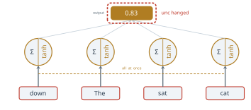
So the price of parallel computation is order, and order has to be given back as data. The simplest way is to give each position a second input alongside its token, which describes where the token sits. If each token carries its own position, then shuffling the tokens moves their positions with them, and the two sentences above become different inputs. The question is what that second input should contain.
Positional encoding
The obvious choice is the index itself, the number \(t\) of the position. It fails in three ways, and each failure states a requirement. Figure 3.2 draws them. The first is scale. The entries of a trained embedding are small numbers, of order 0.3 in the figure, while the index of the last word of a long document is 512 or 50,000. Added to the embedding, or appended to it, such a number dominates every other feature. The second failure comes from the natural repair, dividing the index by the length of the sentence so that every value lies between 0 and 1. Counting positions from 0, position 3 of a sentence of 5 tokens is then coded \(3/5 = 0.60\) and position 3 of a sentence of 20 tokens is coded \(3/20 = 0.15\). The code for a position depends on the length of the sentence, and the model cannot learn a fixed meaning for it. The third failure is the one that matters most. Two tokens three positions apart near the start of a sentence stand in the same relation as two tokens three apart near its end, and attention needs to be able to recognise that relation. Neither the raw index nor the normalised one makes the offset between two positions easy to read from their codes.
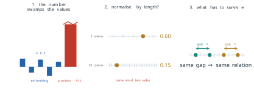
The requirements are therefore three. The position signal must be bounded, whatever the position. It must be computed from the position alone, not from the length of the sentence. And a fixed offset \(k\) between two positions must be recoverable from their codes in the same way at every position. A periodic function meets the first requirement by construction, and a function of the position alone meets the second. Vaswani and colleagues chose a family of sine and cosine waves, one pair per two dimensions of the embedding, each at its own frequency (Vaswani et al. 2017), which also meets the third, as we now show. Figure 3.3 sets the three requirements beside the solution.
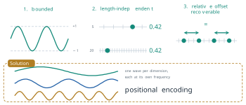
Definition 3.1 (Sinusoidal positional encoding) Let \(D\) be the dimension of the embeddings, taken to be even. The positional encoding of position \(t = 0, 1, 2, \ldots\) is the vector \(\mathbf{p}_t \in \mathbb{R}^{D}\) with components \[ p_{t,2i} = \sin\left(\omega_i t\right), \qquad p_{t,2i+1} = \cos\left(\omega_i t\right), \qquad \omega_i = 10000^{-2i/D}, \qquad i = 0, \ldots, \tfrac{D}{2} - 1 . \tag{3.1}\] The input to the first layer at position \(t\) is the sum \(\mathbf{x}_t + \mathbf{p}_t\) of the token embedding and the positional encoding (in the original design the embedding is first scaled by \(\sqrt{D}\), as noted below).
Vaswani and colleagues wrote the components as \(\mathrm{PE}_{(pos, 2i)} = \sin\left(pos / 10000^{2i/d_{\text{model}}}\right)\) and \(\mathrm{PE}_{(pos, 2i+1)} = \cos\left(pos / 10000^{2i/d_{\text{model}}}\right)\), which is Equation 3.1 with \(pos = t\) and \(d_{\text{model}} = D\). The figures of this section write \(d\) for \(D\). The frequency \(\omega_i\) falls geometrically with \(i\), from \(\omega_0 = 1\) to \(\omega_{D/2-1} = 10000^{-(D-2)/D}\), so the wavelengths \(2\pi/\omega_i\) run from \(2\pi\) to \(10000^{(D-2)/D} \cdot 2\pi\), which is close to \(10000 \cdot 2\pi\) at the \(D = 512\) of the original design (about \(9{,}650 \cdot 2\pi\)) and about \(7{,}500 \cdot 2\pi\) at \(D = 64\). The first pair of dimensions turns once every six or so positions, and the last pair hardly moves over a sentence. The encoding has no learned parameters.
The first two requirements hold by construction. Every component lies in \([-1, 1]\), and since \(\sin^2 + \cos^2 = 1\) for each pair, every \(\mathbf{p}_t\) has the same length, \(\lVert \mathbf{p}_t \rVert = \sqrt{D/2}\). The components depend on \(t\) and \(i\) and on nothing else. The third requirement follows from the angle-addition formulas. For the pair of dimensions \(2i\) and \(2i + 1\), \[ \begin{pmatrix} \sin\left(\omega_i (t + k)\right) \\ \cos\left(\omega_i (t + k)\right) \end{pmatrix} = \begin{pmatrix} \cos(\omega_i k) & \sin(\omega_i k) \\ -\sin(\omega_i k) & \cos(\omega_i k) \end{pmatrix} \begin{pmatrix} \sin(\omega_i t) \\ \cos(\omega_i t) \end{pmatrix} . \tag{3.2}\] The matrix is a rotation by the angle \(\omega_i k\), and it depends on the offset \(k\) but not on \(t\). Stacking one such block for each \(i\) gives a \(D \times D\) matrix \(R_k\) with \(\mathbf{p}_{t+k} = R_k \mathbf{p}_t\) for every position \(t\). So the encoding of the position \(k\) steps further on is a fixed linear function of the encoding of the present position. This was the reason Vaswani and colleagues gave for the choice: they hypothesised that it would let the model learn to attend by relative position, since a linear map is what the projections of Equation 2.22 can represent (Vaswani et al. 2017). A second consequence concerns the dot products that attention computes. Summing the products of the components pair by pair and using \(\sin a \sin b + \cos a \cos b = \cos(a - b)\), \[ \mathbf{p}_t^{\top} \mathbf{p}_{t+k} = \sum_{i=0}^{D/2-1} \cos\left(\omega_i k\right) , \tag{3.3}\] which depends on the offset \(k\) only. Two positions three apart have the same dot product at the start of a sentence and at its end.
The figures of this section use the dimension \(D = 64\), small enough to draw. Figure 3.4 shows the sine components \(p_{t,2i}\) for positions 0 to 11 and the first 16 frequencies. The left columns, with the highest frequencies, change quickly from one row to the next, and the right columns change slowly, so each row has its own pattern.
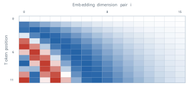
The same numbers make Equation 3.3 concrete. At \(D = 64\) the frequencies are \(\omega_i = 10000^{-i/32}\), so \(\omega_0 = 1\), \(\omega_1 = 0.750\), \(\omega_2 = 0.562\), and so on. The first four components of three encodings are \[ \mathbf{p}_3 = (0.141, -0.990, 0.778, -0.628, \ldots), \quad \mathbf{p}_4 = (-0.757, -0.654, 0.142, -0.990, \ldots), \quad \mathbf{p}_{40} = (0.745, -0.667, -0.989, 0.150, \ldots) . \tag{3.4}\] Every encoding has squared length \(D/2 = 32\). Over all 64 components, Equation 3.3 gives \(\mathbf{p}_3^{\top}\mathbf{p}_4 = 30.92\) and \(\mathbf{p}_3^{\top}\mathbf{p}_{40} = 15.85\), so the cosine similarities of Definition 1.8 are \(0.966\) and \(0.495\). Neighbouring positions have almost the same code and distant positions have clearly different ones, which is what Figure 3.5 shows for the same three positions. The same value \(30.92\) is the dot product of any two encodings one position apart.
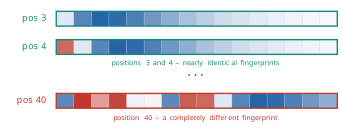
Two details of the original design are easy to miss. The encoding is added to the embedding rather than appended to it, so it uses no extra dimensions, and the embeddings themselves are multiplied by \(\sqrt{D}\) before the sum (Vaswani et al. 2017). Vaswani and colleagues also tried learned positional embeddings, one trained vector per position, and found that the two versions gave nearly identical results. They kept the sinusoids because they might let the model handle sequences longer than any seen in training, which a table of learned vectors cannot do. Whether the hypothesis about relative position holds in a trained model is a separate question. Equation 3.2 shows that the information is present in the input, not that the model uses it. Section 3.2 returns to the learned alternative, which BERT adopted.
Multi-head attention
The second problem of §2.2 was that one attention function gives each position one distribution of weights. A verb may need to find its subject, and the same verb may need to find its object or the words next to it. With one set of weights the two needs compete. Vaswani and colleagues ran several attention functions in parallel, each with its own projections, and combined their outputs. In their words, this lets the model attend at the same time to information from different representation subspaces at different positions (Vaswani et al. 2017).
We write the inputs of a layer as the rows of \(X \in \mathbb{R}^{T \times D}\), as in Definition 2.8. Each of \(H\) heads has its own three projections of the kind in Definition 2.6, \(W^{(Q)}_h, W^{(K)}_h \in \mathbb{R}^{d_k \times D}\) and \(W^{(V)}_h \in \mathbb{R}^{d_v \times D}\), for \(h = 1, \ldots, H\).
Definition 3.2 (Multi-head attention) For queries, keys and values computed from inputs \(X\) (self-attention) or from two sequences (cross-attention, below), multi-head attention with \(H\) heads computes for each head \[ \mathrm{head}_h = \operatorname{Attention}\left(X \left(W^{(Q)}_h\right)^{\top},\; X \left(W^{(K)}_h\right)^{\top},\; X \left(W^{(V)}_h\right)^{\top}\right) \in \mathbb{R}^{T \times d_v} , \tag{3.5}\] with \(\operatorname{Attention}(Q, K, V) = \operatorname{softmax}\left(QK^{\top}/\sqrt{d_k}\right)V\) as in Equation 2.25, joins the heads side by side and projects the result back to width \(D\) with a learned matrix \(W^{O} \in \mathbb{R}^{H d_v \times D}\), \[ \operatorname{MultiHead}(Q, K, V) = \operatorname{Concat}\left(\mathrm{head}_1, \ldots, \mathrm{head}_H\right) W^{O} \in \mathbb{R}^{T \times D} . \tag{3.6}\]
Figure 3.6 draws the computation as matrices. Each head produces a matrix with one row per position and \(d_v\) columns. The concatenation places the \(H\) matrices side by side to give a matrix of \(T\) rows and \(H d_v\) columns, and \(W^{O}\) has \(H d_v\) rows, so the product is defined and has \(T\) rows and \(D\) columns, the same shape as the input. The layer can therefore replace a single-head attention layer anywhere.
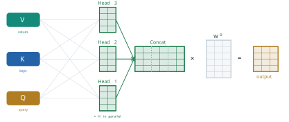
The heads are not wider versions of one head. Vaswani and colleagues used \(D = 512\) and \(H = 8\) heads with \(d_k = d_v = D / H = 64\), so each head works in a space one eighth the width of the model. Computing \(QK^{\top}\) for one head of width \(d_k\) takes \(T^2 d_k\) multiplications, so \(H\) heads of width \(D / H\) take \(T^2 D\), the same as one head of width \(D\). Because of the reduced dimension of each head, the total cost is close to that of a single head with full dimensionality (Vaswani et al. 2017) (Exercise 4). They also measured what the heads buy. On their English to German development set, a model with a single head of width 512 scored 24.9 BLEU (the bilingual evaluation understudy score of §2.2), against 25.8 for the base model with eight heads of width 64, and quality also fell when the heads were made too many and too narrow.
The concatenation followed by \(W^{O}\) has a simple reading. Split \(W^{O}\) into \(H\) blocks of \(d_v\) rows, \(W^{O}_1, \ldots, W^{O}_H\). Then \[ \operatorname{Concat}\left(\mathrm{head}_1, \ldots, \mathrm{head}_H\right) W^{O} = \sum_{h=1}^{H} \mathrm{head}_h\, W^{O}_h , \tag{3.7}\] so the output is a sum of \(H\) contributions, one from each head, each mapped back into the model’s space by its own matrix. A head that has found a subject and a head that has found a neighbouring word contribute separate terms, and neither has to give up weight for the other.
Figure 3.7 shows what this means for the query sat in the three-word sentence The cat sat of §2.2. The weights are illustrative, chosen to show the kind of difference that trained heads show, and are not measured from a model. The first head keeps 0.70 of its weight on sat itself, 0.20 on cat and 0.10 on The: it describes the word in its immediate place. The second head puts 0.75 on cat, the subject that the verb agrees with, 0.15 on sat and 0.10 on The. With a single head the model would have to choose one of these two distributions, or a blend of them. With two heads it keeps both, and Equation 3.7 adds their contributions.
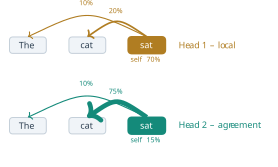
The division of labour between heads is learned, not designed: nothing in Equation 3.6 assigns a relation to a head, and the only pressure towards different heads is that different heads lower the training loss.
The position-wise feed-forward network
Attention moves information between positions. Each output \(\mathbf{z}_i\) of Equation 2.24 is a weighted average of value vectors, and a weighted average is linear in the values. Apart from the softmax that sets the weights, a layer of attention does little to transform the information it gathers. The second sub-layer of the Transformer does that transformation, separately at each position.
Definition 3.3 (Position-wise feed-forward network) For the vector of one position, written as a row \(\mathbf{x} \in \mathbb{R}^{1 \times D}\), the position-wise feed-forward network is \[ \operatorname{FFN}(\mathbf{x}) = \max\left(0,\; \mathbf{x} W_1 + \mathbf{b}_1\right) W_2 + \mathbf{b}_2 , \tag{3.8}\] with \(W_1 \in \mathbb{R}^{D \times d_{\text{ff}}}\), \(\mathbf{b}_1 \in \mathbb{R}^{1 \times d_{\text{ff}}}\), \(W_2 \in \mathbb{R}^{d_{\text{ff}} \times D}\) and \(\mathbf{b}_2 \in \mathbb{R}^{1 \times D}\). The maximum is taken entry by entry (the rectified linear unit, ReLU). The same \(W_1, \mathbf{b}_1, W_2, \mathbf{b}_2\) are applied at every position of the sequence.
Equation 3.8 is the form in which Vaswani and colleagues wrote it, with the row vector on the left (Vaswani et al. 2017). It is a network with one hidden layer of \(d_{\text{ff}}\) units. The inner layer is wider than the model: the original Transformer used \(d_{\text{ff}} = 2048 = 4D\), so each position is expanded from 512 numbers to 2048, passed through the ReLU, and contracted back to 512. Because the weights are shared across positions, the network adds no parameters as the sequence grows, and the \(T\) positions can be processed at once, as a single product of the \(T \times D\) matrix \(X\) with \(W_1\). Figure 3.8 draws two positions passing through the same weights.
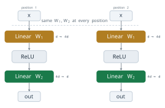
The feed-forward network holds most of the parameters of a layer. At \(D = 512\) and \(d_{\text{ff}} = 2048\) it has \(2 \times 512 \times 2048 = 2{,}097{,}152\) weights and \(2{,}560\) biases. Multi-head attention with eight heads has \(3 \times 8 \times 64 \times 512 = 786{,}432\) weights in its projections and \(512 \times 512 = 262{,}144\) in \(W^{O}\), about \(1.05\) million in all, half as many (Exercise 3).
Mor Geva, Roei Schuster, Jonathan Berant and Omer Levy proposed a reading of what these parameters do in a paper released in 2020 and presented at the conference on Empirical Methods in Natural Language Processing (EMNLP) in 2021 (Geva et al. 2021). Write \(\mathbf{k}_j\) for column \(j\) of \(W_1\) and \(\mathbf{u}_j\) for row \(j\) of \(W_2\). Then Equation 3.8, without its biases, is \[ \operatorname{FFN}(\mathbf{x}) = \sum_{j=1}^{d_{\text{ff}}} \max\left(0,\; \mathbf{x}\, \mathbf{k}_j\right) \mathbf{u}_j , \tag{3.9}\] a sum of \(d_{\text{ff}}\) vectors \(\mathbf{u}_j\), each weighted by how strongly the input matches a pattern \(\mathbf{k}_j\). This is the form of attention with \(d_{\text{ff}}\) fixed keys and values learned in training, and with a ReLU in place of the softmax. Geva and colleagues called the layer a key-value memory. In a trained language model they found that many keys respond to recognisable patterns in the training text, shallow patterns in the lower layers and more semantic ones in the upper layers, and that the corresponding values raise the probability of the words that tend to follow those patterns, particularly in the upper layers. Attention reads from the sentence. On this reading, the feed-forward network reads from what the model learned in training.
Residual connections and layer normalisation
A single block of attention followed by a feed-forward network is shallow. The Transformer stacks six of them in the encoder and six in the decoder, and later models stack many more. Depth brings back the problem of §2.1 in a new form. The gradient that reaches the bottom of a stack of \(L\) layers is a product of \(L\) Jacobians, and a product of many factors can shrink or grow without bound, as Equation 2.5 showed for a recurrent network unrolled in time. The Transformer uses two devices, both taken from earlier work, to keep a deep stack trainable.
The first is the residual connection. Kaiming He, Xiangyu Zhang, Shaoqing Ren and Jian Sun introduced residual learning for image recognition in a preprint of 2015, published at the Conference on Computer Vision and Pattern Recognition (CVPR) in 2016 (He et al. 2016). Their starting point was that deeper networks are harder to train, although extra layers could in principle learn the identity map and so do no harm. Their remedy was to let each group of layers learn a correction to its input instead of a whole new representation. The output of a sub-layer \(F\) becomes \[ \mathbf{y} = \mathbf{x} + F(\mathbf{x}) , \tag{3.10}\] so that \(F = 0\) gives the identity, and a layer that has little to add only has to keep its correction small. With this change they trained networks of 152 layers and won the 2015 ImageNet classification competition.
The effect on the gradient follows from Equation 3.10 directly. Its Jacobian is \[ \frac{\partial \mathbf{y}}{\partial \mathbf{x}} = I + \frac{\partial F}{\partial \mathbf{x}} , \tag{3.11}\] and through \(L\) residual sub-layers the product \(\prod_{l} \left(I + J_l\right)\), with \(J_l\) the Jacobian of sub-layer \(l\), expands into the identity plus terms that involve one, two or more of the \(J_l\). The identity term is a path on which the gradient reaches the bottom of the stack unchanged, whatever the sub-layers do. Without the residual connections the only term is \(\prod_l J_l\), which for twelve sub-layers with Jacobians of size \(0.1\) is \(10^{-12}\) (Exercise 6).
The second device is layer normalisation, which keeps the scale of the activations steady from one layer to the next. Jimmy Lei Ba, Jamie Ryan Kiros and Geoffrey Hinton proposed it in a preprint of 2016 (Ba et al. 2016). The batch normalisation then in use computed its statistics over a mini-batch of examples, so its effect depended on the size of the batch, and it was not obvious how to apply it to recurrent networks. Ba and colleagues computed the statistics over the features of a single example instead, which does the same computation in training and in use.
Definition 3.4 (Layer normalisation) For a vector \(\mathbf{x} \in \mathbb{R}^{D}\) with mean \(\mu = \frac{1}{D}\sum_{m} x_m\) and variance \(\sigma^2 = \frac{1}{D}\sum_{m} (x_m - \mu)^2\), layer normalisation is \[ \operatorname{LayerNorm}(\mathbf{x}) = \boldsymbol{\gamma} \odot \frac{\mathbf{x} - \mu}{\sqrt{\sigma^2 + \epsilon}} + \boldsymbol{\beta} , \tag{3.12}\] where \(\odot\) is the entry-by-entry product, \(\boldsymbol{\gamma}, \boldsymbol{\beta} \in \mathbb{R}^{D}\) are learned, and \(\epsilon\) is a small constant that prevents division by zero.
In the Transformer layer normalisation is applied at each position separately, across the \(D\) features of that position, so it does not depend on the other positions or on the length of the sentence. Vaswani and colleagues combined the two devices into one pattern that wraps every sub-layer, \[ \operatorname{output} = \operatorname{LayerNorm}\left(\mathbf{x} + \operatorname{Sublayer}(\mathbf{x})\right) , \tag{3.13}\] where \(\operatorname{Sublayer}\) is either multi-head attention or the feed-forward network (Vaswani et al. 2017). The figures call this step Add & Norm. In the base model, dropout with rate 0.1 was applied to the output of each sub-layer before the addition. For the sum in Equation 3.13 to be defined, every sub-layer must return vectors of the same width \(D\) as its input, which is why Equation 3.6 projects back to width \(D\) and Equation 3.8 contracts back to it. Figure 3.9 draws the pattern. In this arrangement the normalisation sits on the residual path itself, so the identity path of Equation 3.11 passes through a LayerNorm after every sub-layer. Section 3.3 returns to this point: later models moved the normalisation to the input of each sub-layer, which leaves the residual path untouched.
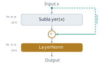
The encoder and the decoder
The parts are now in place, and the encoder is assembled from them in one fixed pattern. Its input is \(X^{(0)} = \sqrt{D}\,\left[\mathbf{x}_1^{\top}; \ldots; \mathbf{x}_T^{\top}\right] + \left[\mathbf{p}_1^{\top}; \ldots; \mathbf{p}_T^{\top}\right]\), the scaled token embeddings plus the positional encodings, one row per position.
Definition 3.5 (Encoder block) An encoder block maps \(X \in \mathbb{R}^{T \times D}\) to a matrix of the same shape in two steps, each wrapped by Equation 3.13 and applied row by row: \[ Z = \operatorname{LayerNorm}\left(X + \operatorname{MultiHead}(X, X, X)\right), \qquad Y = \operatorname{LayerNorm}\left(Z + \operatorname{FFN}(Z)\right) . \tag{3.14}\] The encoder is a stack of \(N\) such blocks with separate parameters, \(X^{(n)} = \operatorname{Block}_n\left(X^{(n-1)}\right)\) for \(n = 1, \ldots, N\), and its output is \(E = X^{(N)}\).
\(\operatorname{MultiHead}(X, X, X)\) is self-attention: the queries, keys and values of every head are computed from the same \(X\). The first step moves information between positions and the second transforms it at each position. Figure 3.10 draws the block. Because the output has the shape of the input, blocks can be stacked to any depth, and each block works on the representations that the block below produced. Vaswani and colleagues used \(N = 6\) (Vaswani et al. 2017). The encoder of BERT, the subject of §3.2, has 12 blocks in its base size and 24 in its large size (Devlin et al. 2019), and the largest GPT-3 model of Brown and colleagues has 96 (Brown et al. 2020). Figure 3.11 draws these depths to scale.
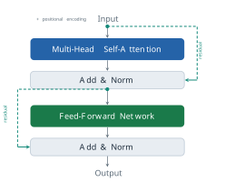
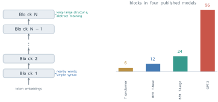
Only at the first block does the position of a word enter, as part of the input. Every operation after that is either position-wise (the feed-forward network, layer normalisation and the residual sum) or self-attention, so without \(\mathbf{p}_t\) the whole encoder would inherit the permutation property of §2.2. With \(\mathbf{p}_t\) added, two inputs that differ only in word order are different matrices from the start, and the encoder can give them different outputs (Exercise 7).
The decoder produces the target sentence, and it needs two things the encoder does not. The first is that it must not use target words it has not yet produced. In a self-attention layer every position can attend to every other, including the positions to its right, which at generation time do not exist yet. The decoder’s self-attention is therefore masked. Before the softmax a matrix \(M \in \mathbb{R}^{T \times T}\) is added to the scores, \[ \operatorname{MaskedAttention}(Q, K, V) = \operatorname{softmax}\left(\frac{QK^{\top}}{\sqrt{d_k}} + M\right) V, \qquad M_{ij} = \begin{cases} 0 & j \le i, \\ -\infty & j > i . \end{cases} \tag{3.15}\] Since \(\exp(-\infty) = 0\), every weight \(\alpha_{i,j}\) with \(j > i\) is exactly zero, and the weights of the remaining positions still sum to 1. Position \(i\) attends to positions \(1, \ldots, i\) only. Vaswani and colleagues described the mask in these terms, as setting to \(-\infty\) the inputs of the softmax that correspond to illegal connections (Vaswani et al. 2017).
The second need is to read the source sentence. This is the attention of §2.2 between two sequences, now called cross-attention. Its queries are computed from the decoder’s own states \(Y \in \mathbb{R}^{T_y \times D}\) and its keys and values from the encoder’s output \(E \in \mathbb{R}^{T_x \times D}\), \[ Q = Y \left(W^{(Q)}\right)^{\top}, \qquad K = E \left(W^{(K)}\right)^{\top}, \qquad V = E \left(W^{(V)}\right)^{\top} , \tag{3.16}\] with one set of projections \(W^{(Q)}_h, W^{(K)}_h, W^{(V)}_h\) per head. Head \(h\) is \(\operatorname{Attention}(Q_h, K_h, V_h)\) as in Definition 3.2, with \(Y\) in place of \(X\) in the queries and \(E\) in place of \(X\) in the keys and values, and the heads are joined by Equation 3.6. Definition 2.7 allows \(T_x \ne T_y\). The weights of a target position form one row of the alignment matrix of Figure 2.7, and the context vector of Bahdanau and colleagues becomes one row of the output.
Definition 3.6 (Decoder block) A decoder block maps the decoder states \(Y \in \mathbb{R}^{T_y \times D}\) and the encoder output \(E\) to a matrix of the shape of \(Y\) in three steps, each wrapped by Equation 3.13. The steps are masked multi-head self-attention of \(Y\) (Equation 3.15), multi-head cross-attention with queries from the result and keys and values from \(E\) (Equation 3.16), and the feed-forward network of Equation 3.8. The decoder is a stack of \(N\) such blocks, and every block receives the same \(E\).
Figure 3.12 draws the block, and Figure 3.13 and Figure 3.14 show the two new kinds of attention on short examples. In the masked case, the query sat reaches The, cat and itself with the weights of the first head of Figure 3.7, and the arc to the later word down is blocked. In the cross case the encoder holds the French Le chat s’est assis and the decoder’s query sat puts illustrative weights of 0.50 on assis and 0.40 on s’est, with 0.06 on chat and 0.04 on Le.
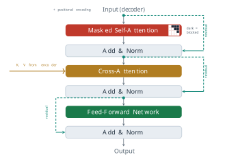
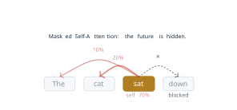
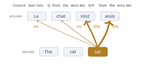
Figure 3.15 puts the two stacks together. The encoder runs once over the source sentence. Its output \(E\) is not passed to the decoder at the bottom, as the single vector of §2.1 was, but to the cross-attention sub-layer of every one of the \(N\) decoder blocks, as keys and values. Nothing about the source has to be compressed into one vector, and each decoder block reads the whole of it.
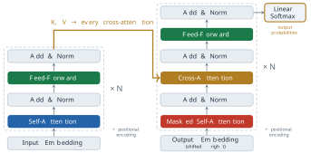
From the decoder to a word
The last decoder block gives a vector \(\mathbf{y}_i \in \mathbb{R}^{1 \times D}\) for each target position. A final linear layer maps it to one score for each word of the vocabulary \(V\), and a softmax turns the scores into a distribution, as in the recurrent language model of Equation 2.4: \[ \boldsymbol{\ell}_i = \mathbf{y}_i W_{\text{out}} + \mathbf{b}_{\text{out}} \in \mathbb{R}^{1 \times \lvert V \rvert}, \qquad P\left(y_i = w \mid y_{<i}, x\right) = \frac{\exp(\ell_{i,w})}{\sum_{w' \in V} \exp(\ell_{i,w'})} . \tag{3.17}\] The scores \(\boldsymbol{\ell}_i\) are called logits. Vaswani and colleagues shared one matrix between the input embeddings of both stacks and this output layer (Vaswani et al. 2017).
For an example we take six logits, which we treat as the whole vocabulary: \(3.1\) for cat, \(1.6\) for dog, \(1.2\) for mat, \(0.8\) for sat, \(0.6\) for the and \(0.4\) for one entry that stands for the rest. Their exponentials are \(22.198\), \(4.953\), \(3.320\), \(2.226\), \(1.822\) and \(1.492\), with sum \(36.011\), so the probabilities are \[ 0.616, \quad 0.138, \quad 0.092, \quad 0.062, \quad 0.051, \quad 0.041 . \tag{3.18}\] Figure 3.16 draws the computation. The model’s output is this distribution, not a word. Choosing a word is a separate decision. Taking the most probable entry (the argmax) gives cat every time. Sampling from the distribution gives cat about 62% of the time and other words otherwise, and dividing the logits by a temperature \(\tau\) before the softmax, which gives \(\operatorname{softmax}(\boldsymbol{\ell}_i / \tau)\), makes the distribution sharper for \(\tau < 1\) and flatter for \(\tau > 1\) (Exercise 8).
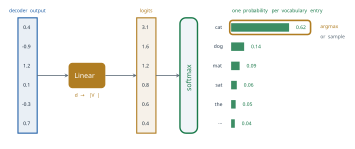
The decoder’s input is the target sentence shifted one place to the right: a start token \(\langle s \rangle\) followed by the target words, so that the vector at position \(i\) is computed from \(\langle s \rangle, y_1, \ldots, y_{i-1}\) and predicts \(y_i\). At no position is the word to be predicted part of what that position can see. The model is trained by minimising the negative log-likelihood of the target words, \[ \mathcal{L} = -\sum_{i=1}^{T_y} \log P\left(y_i \mid y_{<i}, x\right) , \tag{3.19}\] in which every term uses the true previous words \(y_{<i}\), not the words the model would itself have produced. Using the true outputs as inputs in training is called teacher forcing, a name given by Ronald Williams and David Zipser in 1989 for recurrent networks (Williams and Zipser 1989).
Together with the mask, teacher forcing gives the Transformer its speed in training. The whole shifted target goes into the decoder in one pass, as one matrix. Because of Equation 3.15, the output at position \(i\) depends only on positions \(1, \ldots, i\), so it is the same as it would be if the decoder had been run on the prefix alone (Exercise 5). One forward pass therefore produces all \(T_y\) predictions and all \(T_y\) terms of Equation 3.19 at once, which a recurrent decoder could compute only one step after another. Figure 3.17 shows this for the target The cat sat: four inputs, four predictions and four losses \(L_1, \ldots, L_4\), the last of which is for the end token \(\langle e \rangle\).
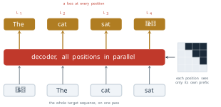
At inference there is no target to feed in. The decoder starts from \(\langle s \rangle\), predicts a distribution, a word is chosen from it, the word is appended to the input, and the decoder runs again on the longer prefix, until it produces \(\langle e \rangle\). A model that feeds its own outputs back as inputs in this way is called autoregressive. Figure 3.18 draws the loop. Training uses one pass for the whole target, while generation uses one pass for every word produced, so an answer of a hundred words costs a hundred passes through the decoder. The two modes also differ in what the model sees. In training the prefix is always correct, while in generation it contains the model’s own earlier choices, including its mistakes.
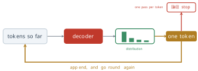
What the design bought, and what it assumes
Vaswani and colleagues compared layer types by three measures: the work per layer, the number of operations that must run one after another, and the longest path that a signal travels between two positions. Table 3.1 gives their figures, with \(T\) the length of the sequence, \(D\) the width of the representation and \(k\) the width of a convolution kernel (Vaswani et al. 2017).
| Layer type | Work per layer | Sequential operations | Maximum path length |
|---|---|---|---|
| Self-attention | \(O(T^2 D)\) | \(O(1)\) | \(O(1)\) |
| Recurrent | \(O(T D^2)\) | \(O(T)\) | \(O(T)\) |
| Convolutional | \(O(k T D^2)\) | \(O(1)\) | \(O(\log_k T)\) |
The table states the three properties of Figure 3.19. A recurrent layer needs \(T\) steps in order, and a self-attention layer needs a constant number, so the positions of a sequence are processed in parallel. The path between two positions has length of order \(T\) through a recurrence and is a single step through attention, which removes the first limit of §2.1 for good. And because every block has the same shape, the model can be enlarged in three independent ways, by more blocks, more heads or a larger width, without any change of design. Self-attention also does less work per layer than a recurrent layer whenever \(T < D\), which is most often the case for the sentences of machine translation, with \(D = 512\).
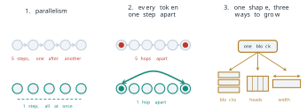
The results bore this out. On the English to German translation task of the 2014 Workshop on Statistical Machine Translation (WMT), the larger Transformer scored 28.4 BLEU, more than 2 points above the best earlier results, ensembles included. On English to French it set a single-model record of 41.8 after 3.5 days of training on eight graphics processors. The base model, trained for 12 hours on eight processors, scored 27.3 on English to German, above every earlier published model, ensembles included, at an estimated training cost of \(3.3 \times 10^{18}\) floating-point operations, against \(2.3 \times 10^{19}\) for the recurrent system GNMT with reinforcement learning, which scored 24.6 (Vaswani et al. 2017). The comparison is of whole systems, not of layers. It shows a better model at about a seventh of the cost, not a difference of several orders of magnitude.
The design also has costs and assumptions. The score matrix of every self-attention layer has \(T^2\) entries, so the work and memory grow with the square of the length, the limit already noted in §2.2. The positional encoding fixes positions by absolute index. The hypothesis that the model reads relative offsets through Equation 3.2 was a reason for the choice, not a measured property, and learned embeddings did as well on the lengths tested. The hope of extrapolation did not hold up either: Press and colleagues later found that models with sinusoidal positions degrade quickly on inputs longer than those seen in training (Press et al. 2022). Generation remains sequential: the parallelism of the Transformer is a property of training, and at inference a long output still costs one pass per token. Finally, the mask of Equation 3.15 encodes an assumption about the task, that the output is produced from left to right.
The Transformer was proposed as a model of translation, with an encoder that reads and a decoder that writes. Later work kept the blocks and changed which stacks were used. Models that keep only the encoder see the whole of their input at once and are suited to understanding a text rather than producing one. BERT is the first of this family and the subject of §3.2 (Devlin et al. 2019). Models that keep only the decoder, with its causal mask and without cross-attention, are trained to predict the next token and generate text. The GPT models are the subject of §3.3. Models that keep both stacks remain in use for translation and summarisation. Each family is a choice of which parts of Figure 3.15 to keep, and the parts themselves are the ones defined in this section.
Exercises
Take \(D = 4\) in Equation 3.1, so that \(\omega_0 = 1\) and \(\omega_1 = 0.01\). (a) Compute \(\mathbf{p}_0\), \(\mathbf{p}_1\) and \(\mathbf{p}_2\) to three decimal places. (b) Check that each has length \(\sqrt{2}\). (c) Explain why the third and fourth components change only slowly, by at most one radian of angle over the first hundred positions, and what part of the encoding tells nearby positions apart.
- Derive Equation 3.2 from the formulas for \(\sin(a + b)\) and \(\cos(a + b)\).
- Derive Equation 3.3, and conclude that \(\mathbf{p}_t^{\top}\mathbf{p}_{t+k}\) does not depend on \(t\).
- Show that \(R_k\) is orthogonal and that \(R_k R_m = R_{k+m}\). (d) With \(D = 4\) as in Exercise 1, compute \(\mathbf{p}_t^{\top}\mathbf{p}_{t+k}\) for \(k = 1\) and \(k = 3\).
Use the base model of Vaswani and colleagues: \(D = 512\), \(H = 8\), \(d_k = d_v = 64\), \(d_{\text{ff}} = 2048\), \(N = 6\). Ignore the biases of the attention projections. (a) Count the parameters of one encoder block, including its two layer normalisations. (b) Count the parameters of one decoder block. (c) Count the parameters of the two stacks together, without the embeddings, and compare with the LSTM cell of Equation 2.13 with input and hidden width 512, which has 2,099,200 parameters.
- Show that computing \(QK^{\top}\) for \(H\) heads of width \(d_k = D/H\) takes the same number of multiplications as for one head of width \(D\). (b) Show that the projections of \(H\) heads of width \(D/H\) have as many parameters as one head of width \(D\). (c) Derive Equation 3.7. (d) Explain why the output of a single head of width \(D\) and the output of Equation 3.6 are not in general the same function of \(X\), even though they cost the same.
- For the scores \((1.0, 2.0, 0.5)\) of the second position of a sequence of length 3, compute the weights with and without the mask of Equation 3.15. (b) Show that with the mask, the output of a self-attention layer at position \(i\) does not change when the inputs at positions \(j > i\) are changed. (c) Extend (b) to a whole decoder stack, noting which operations are position-wise.
- Conclude that one masked pass over the shifted target computes the same predictions as \(T_y\) separate passes over its prefixes.
- For a stack of \(L\) scalar sub-layers with derivatives \(j_1, \ldots, j_L\), compare the derivative of the output with respect to the input without residual connections, \(\prod_l j_l\), and with them, \(\prod_l (1 + j_l)\). Evaluate both for \(L = 12\) and \(j_l = 0.1\).
- Expand \(\prod_{l=1}^{3} (I + J_l)\) and identify the term that does not involve any \(J_l\).
- Layer normalisation follows each addition in Equation 3.13. Show that \(\operatorname{LayerNorm}\) gives the same result for \(\mathbf{x}\) and for \(c\,\mathbf{x} + b\mathbf{1}\) with \(c > 0\) (ignoring \(\epsilon\)), and explain what this means for the scale of activations in a deep stack.
- Show that every operation of the encoder block Equation 3.14 other than self-attention acts on each row separately, and conclude, using Exercise 5 of §2.2, that an encoder whose input has no positional encoding satisfies \(\operatorname{Encoder}(PX) = P\,\operatorname{Encoder}(X)\) for every permutation matrix \(P\). (b) Show that once \(\mathbf{p}_t\) is added, permuting the token embeddings does not in general permute the output. (c) For The dog bit the man and The man bit the dog, explain what (a) and (b) mean for the vector the encoder gives dog.
Use the six logits of Equation 3.18. (a) Verify the probabilities. (b) Compute the distribution after dividing the logits by a temperature \(\tau = 2\), and again for \(\tau = 0.5\).
- What does the distribution tend to as \(\tau \to 0\) and as \(\tau \to \infty\)? (d) If the true next word is cat, what is its term in Equation 3.19 at \(\tau = 1\)?
3.2 BERT: Reading the Whole Sentence
Section 3.1 ended by dividing the descendants of the Transformer by which of its two stacks they keep. This section takes the first family, the models that keep only the encoder, and asks how such a model should be trained. The question is less simple than it looks. Every model of language in this book so far has been trained to predict the next token, by the chain rule of Equation 1.5 and the loss of Equation 3.19. That objective has a direction built into it. The prediction at position \(i\) may use the tokens before \(i\) and nothing after it, and the causal mask of Equation 3.15 is how a Transformer enforces this. For generating text the direction is exactly right, since the words to the right do not exist yet. For understanding a text that is already written, it throws away half of the evidence.
The question has been waiting since §1.2. That section closed on the word bank. A static embedding gives the word one vector, and Equation 1.24 showed what that vector encodes: the associations of each sense, lowered by the log of that sense’s share of the occurrences. The vector is the same in She deposited money at the bank and in She walked along the river bank, so it cannot use the sentence to choose the sense. A representation that can choose must be computed from the sentence, and the words that settle the choice are often on the right. This section shows how Devlin and colleagues obtained such representations from a Transformer encoder, what their model assumes, and where it stops.
Direction comes from the objective
Consider the sentence The cat sat on the mat with its third word hidden, so that the model must fill the gap in The cat ___ on the mat. A model trained by Equation 3.19 predicts the gap from The and cat alone. The three words after it, on the mat, are in the sentence and are informative, since few verbs fit between cat and on the mat, but the objective does not allow them to be used. Figure 3.20 draws the two cases. In the upper row only the two tokens to the left reach the gap. In the lower row every other token reaches it, from both sides.
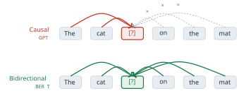
The two rows use the same sentence and could use the same network. They differ only in a rule about which positions may be read. An encoder block, Definition 3.5, applies self-attention with no mask at all, so every position already attends to every other. The restriction to the left was never a property of the architecture. It was a property of the training objective, which demands that the prediction for position \(i\) not depend on the token at \(i\) or after it. Remove that demand and the encoder can read in both directions. The difficulty is that the demand cannot simply be removed while the target stays the next token, and the reason is worth stating exactly.
Suppose an encoder with no mask is trained to predict \(x_{i+1}\) from its output at position \(i\). The input row of position \(i+1\) contains the embedding of \(x_{i+1}\) itself. In the first self-attention layer, position \(i\) attends to position \(i+1\), so the output of that layer at \(i\) already contains the answer, weighted by \(\alpha_{i,i+1}\), the attention weight that position \(i\) gives to position \(i+1\). Training would quickly learn to put weight on the next position and copy, and the model would learn nothing about language. Devlin and colleagues put the point in terms of depth: bidirectional conditioning would allow each word to indirectly see itself in a multi-layer model, so the prediction would be trivial (Devlin et al. 2019). The same leak occurs for a target at position \(i\) itself. The residual connection of Equation 3.13 carries \(x_i\) straight to the output at \(i\). Even if that path were removed and position \(i\) were barred from attending to itself, two layers would reopen it: position \(i\) in the second layer attends to some position \(j\) whose first-layer output already attended to \(x_i\), so the token reaches its own prediction through \(j\) (Exercise 3).
Before 2018 the usual way around the leak kept the direction and doubled the model. Peters and colleagues, at the Allen Institute for Artificial Intelligence and the University of Washington, trained one recurrent language model from left to right and a second one from right to left, and concatenated their states to obtain a representation of each word in context. They presented the method, called ELMo, at the North American Chapter of the Association for Computational Linguistics (NAACL) in 2018 (Peters et al. 2018). Each half of ELMo still sees only one side of the word. The two sides meet only when the states of the two networks are concatenated, after each has finished reading, so no layer combines evidence from the left and from the right. Devlin and colleagues called such a model shallowly bidirectional and set out to build one that is deeply bidirectional, in which every layer reads both sides.
Masked language modelling
The answer of Devlin and colleagues was to change what is predicted. Instead of the next token, the model predicts tokens that have been hidden from it, anywhere in the sentence, from everything that remains. A hidden token is no longer in the input, so there is nothing for it to leak, and every other token, on either side, may be used. The task is old. Taylor described it in 1953, in the Journalism Quarterly, as a test of how readable a passage is: delete words from a text and measure how well readers restore them (Taylor 1953). He called it the cloze procedure, and Devlin and colleagues cite it as the source of their objective.
Definition 3.7 (Masked language modelling) Let \(x = (x_1, \ldots, x_T)\) be a sequence of tokens. Masked language modelling chooses a random set of positions \(\mathcal{M} \subset \{1, \ldots, T\}\), replaces the tokens at those positions to obtain a corrupted sequence \(\tilde{x}\), and trains a bidirectional encoder to restore them by minimising \[ \mathcal{L}_{\text{MLM}} = -\sum_{i \in \mathcal{M}} \log P\left(x_i \mid \tilde{x}\right) . \tag{3.20}\]
The probability in Equation 3.20 comes from the same output layer as in §3.1: the encoder’s output vector at position \(i\) is multiplied by the matrix of output embeddings and passed through the softmax of Equation 3.17. Two differences from Equation 3.19 matter. The condition is the whole corrupted sequence \(\tilde{x}\) rather than a prefix, which is what makes the representation bidirectional. And the sum runs over the chosen positions only, not over every position. In BERT each token is chosen with probability 0.15, so a sequence of 512 tokens gives about 77 predictions where a left-to-right model would give 512. Each sequence teaches the model less, and Devlin and colleagues reported that their model converged somewhat more slowly than a left-to-right one, though it overtook it in accuracy almost at once (Devlin et al. 2019).
How the chosen tokens are replaced is the subtle part. The obvious choice is a special token, written [MASK], at every chosen position. The trouble is that [MASK] then appears in every training input and in no input the model will see afterwards, when it is used on real text. Training and use see two different kinds of input, and a model that has learned to do its work only at positions marked [MASK] has no reason to build a useful representation of an unmarked token. BERT therefore treats each chosen position in one of three ways, drawn independently: \[ \tilde{x}_i = \begin{cases} \text{[MASK]} & \text{with probability } 0.8, \\ w \sim \operatorname{Uniform}(V) & \text{with probability } 0.1, \\ x_i & \text{with probability } 0.1, \end{cases} \qquad i \in \mathcal{M} , \tag{3.21}\] and \(\tilde{x}_i = x_i\) for every \(i \notin \mathcal{M}\). Here \(V\) is the vocabulary of §1.1. The loss of Equation 3.20 is computed at all chosen positions, whichever of the three treatments they received.
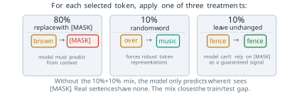
Figure 3.21 shows one draw, three positions chosen from an eight-token sentence. Three of eight is far more than 15 per cent; a real draw on a sentence of this length would usually choose one token or none, and the figure chooses three so that each treatment appears once. The tokens brown and over show the first two cases. The token fence shows the third. It enters the encoder unchanged, and the model must still predict it, without knowing that it was chosen.
The design works by taking information away from the model. Since 1.5 per cent of all tokens are replaced by a random word, the model cannot trust any input token completely. Since another 1.5 per cent are chosen but left as they are, it cannot assume that an unmarked token is not a target. Every position might be asked for, so the model has to keep a representation of every token that reflects both the token and its context. The proportions were chosen by experiment. Devlin and colleagues compared six mixtures. Fine-tuning was robust to the choice, and 80, 10 and 10 was best or within 0.2 points of the best on every measure they report. Using [MASK] alone hurt most when the representations were later used without fine-tuning (Devlin et al. 2019). The expected composition of the input is simple arithmetic. Of all tokens, \(0.15 \times 0.8 = 12\) per cent become [MASK], 1.5 per cent become random words, 1.5 per cent are chosen but unchanged, and 85 per cent are not chosen at all. The input differs from real text at 13.5 per cent of its positions.
The model
Devlin and colleagues, at Google AI Language, released the model in October 2018 and presented it at NAACL in 2019, under the title BERT: Pre-training of Deep Bidirectional Transformers for Language Understanding (Devlin et al. 2019). The name abbreviates Bidirectional Encoder Representations from Transformers. The network is the encoder of §3.1 with almost nothing added. What changes is the input, and what the outputs are used for.
The text is first split into WordPiece units, the subword method that Wu and colleagues had used in Google’s translation system (Wu et al. 2016), with a vocabulary of 30,000 entries. A frequent word is one unit; a rare word is split into a few pieces, so no word is out of the vocabulary. Two special tokens are added. Every input begins with [CLS], whose output will stand for the whole input, and every sentence ends with [SEP]. An input may hold two sentences, written A and B, as \[ \text{[CLS]}\; a_1 \ldots a_m\; \text{[SEP]}\; b_1 \ldots b_n\; \text{[SEP]} , \] which is how BERT reads a question with its passage or a premise with its hypothesis.
Definition 3.8 (BERT input representation) The input vector at position \(t\) of a BERT encoder is the sum of three learned vectors, \[ \mathbf{x}_t = \mathbf{w}_{x_t} + \mathbf{p}_t + \mathbf{s}_{g(t)} , \qquad t = 1, \ldots, T \le 512 , \tag{3.22}\] a token embedding \(\mathbf{w}_{x_t}\) (one row of the embedding matrix, Definition 1.7), a position embedding \(\mathbf{p}_t\), and a segment embedding \(\mathbf{s}_{g(t)}\), where \(g(t) \in \{A, B\}\) is the sentence that position \(t\) belongs to. The sum is normalised by 1 before it enters the first encoder block. (In §3.1, \(\mathbf{x}_t\) was the token embedding alone; from here it is the whole input vector.)
The position term deserves a comparison with §3.1. There, Definition 3.1 fixed \(\mathbf{p}_t\) by the sinusoids of Equation 3.1, with no parameters. BERT instead learns a separate vector for every position from 1 to 512, a table of \(512 \times D\) parameters trained with the rest of the model. Vaswani and colleagues had tried the same thing and found the two choices nearly equal in quality on translation (Vaswani et al. 2017), so BERT gave up little in accuracy. It gave up something else. A sinusoid is defined for every integer \(t\), and Equation 3.2 relates the encodings at \(t\) and \(t + k\) by a rotation that does not depend on \(t\). A learned table has no row 513, and nothing relates its rows except what training put there. A BERT model therefore cannot read a sequence longer than 512 tokens at all, and the positions beyond 128, which appear only in the last 10 per cent of pre-training (below), are learned from far fewer examples than the early ones. For a model meant to read sentences and short passages the trade was reasonable, and the limit only became a constraint when longer documents were wanted.
Above the input sits a stack of \(N\) encoder blocks exactly as in Definition 3.5: multi-head self-attention, Definition 3.2, and the position-wise network of Definition 3.3, each wrapped by Equation 3.13. Devlin and colleagues trained two sizes. In the notation of §3.1, where \(D\) is the model width and \(H\) the number of heads, BERT-Base has \(N = 12\), \(D = 768\) and \(H = 12\), about 110 million parameters in all, and BERT-Large has \(N = 24\), \(D = 1024\) and \(H = 16\), about 340 million. (The paper writes \(L\) for the depth, \(H\) for the width and \(A\) for the heads; we keep the letters of §3.1.) In both, the inner width of the feed-forward network is \(4D\). The base size was chosen to match the GPT model of Radford and colleagues, published by OpenAI four months earlier (Radford et al. 2018), so that the two could be compared at equal size. Exercise 4 counts the parameters.
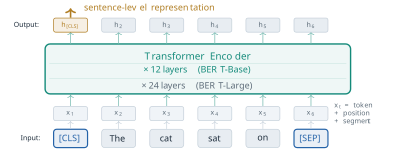
Figure 3.22 shows the whole model. At the top every position has an output vector, and these are read in two ways. The output at [CLS] is used for anything about the input as a whole, such as its sentiment or whether two sentences agree. The outputs at the other positions are used for anything about a single token, such as whether it names a person. The [CLS] token has no meaning of its own at the input. Its output means what the training objectives make it mean, and the next two parts of this section show which objectives those are.
The difference between an encoder trained this way and a decoder trained by Equation 3.19 can be written as one matrix. In Equation 3.15 the decoder adds to its attention scores a matrix \(M\) with \(M_{ij} = -\infty\) for \(j > i\). The BERT encoder adds nothing, which is the same as \(M_{ij} = 0\) for every \(i\) and \(j\). Read the mask as a grid whose row \(i\) is the query, the position that attends, and whose column \(j\) is the key, the position attended to. A cell is open when \(M_{ij} = 0\) and closed when \(M_{ij} = -\infty\). Figure 3.23 draws both grids for the six-token input [CLS] The cat sat on [SEP]. The causal grid is a lower triangle. The row for sat reaches [CLS], The, cat and itself, and no further. The bidirectional grid is full.
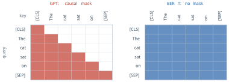
Counting the open cells measures how much context each objective allows. In the causal grid, row \(i\) has \(i\) open cells, so a sequence of length \(T\) has \[ \sum_{i=1}^{T} i = \frac{T(T+1)}{2} \quad \text{open pairs out of } T^2 , \qquad \frac{T^2}{T(T+1)/2} = \frac{2T}{T+1} . \tag{3.23}\] For the six tokens of Figure 3.23 the causal grid has \(1 + 2 + 3 + 4 + 5 + 6 = 21\) open pairs and the bidirectional grid has all 36. The bidirectional model may use 15 more pairs, about 71 per cent more than the causal one. The ratio \(2T/(T+1)\) grows towards 2 as \(T\) grows. At \(T = 512\) it is \(1024/513 \approx 1.996\), so for inputs of realistic length the causal mask closes almost exactly half of the grid.
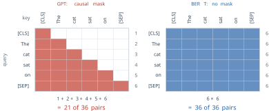
The count says how many pairs are available, not how many the model uses or how much each is worth. For the first token of a sentence the causal mask leaves only the token itself, and for the last token it leaves everything, so the loss of context falls unevenly, on the early words. Whether the extra pairs help is an empirical question, and the results later in this section answer it.
A vector for each occurrence
The output of the encoder at position \(t\) is a function of the whole input, not of the token at \(t\) alone. Write it as \[ \mathbf{h}_t = \operatorname{BERT}(x_1, \ldots, x_T)_t \in \mathbb{R}^D . \tag{3.24}\] Two occurrences of the same token in different sentences give, in general, two different vectors. A representation of this kind is called contextual, against the static embeddings of §1.2, where the vector of a token is one row of a matrix and does not depend on its neighbours.
Return now to bank and Equation 1.24. A static vector for bank had to serve every occurrence, and the PMI that it encodes for a context word of either sense is lowered by the log of that sense’s share, \(\log \pi\) or \(\log(1 - \pi)\). Here \(\pi\) is the share of the occurrences that carry the first sense. The same penalty applies in every sentence, including those in which the sense is obvious. A contextual vector removes the cause of the penalty. The output at bank in She walked along the river bank is computed after self-attention has mixed in the vectors of river and walked, and the output at bank in She deposited money at the bank after it has mixed in money and deposited. Nothing forces the two outputs to coincide, and the masked objective rewards the model for separating them whenever the sense changes which words can fill the neighbouring gaps. The prior share \(\pi\) still matters when the sentence gives no clue, as in She went to the bank, and that is the right behaviour: with no evidence, the frequent sense is the better guess. What the contextual model drops is the obligation to apply that guess when the evidence is present. In BERT the evidence is read from both sides, so in The bank was steep and muddy the deciding words come after the word they decide, and a left-to-right model would have to represent bank before reading them.
The argument shows that a contextual model can separate the senses, not that a particular trained model does. That is a property to be measured, and Exercise 7 sets up the measurement.
The second objective
Masked language modelling trains each output on its own sentence. Many of the tasks BERT was built for are about two pieces of text, a question and a passage, or a premise and a claim that may follow from it. Devlin and colleagues added a second objective so that the [CLS] output would learn to relate them. In next sentence prediction, each training input packs two segments as above. Half of the time B is the text that really followed A in the corpus, labelled IsNext, and half of the time B is a segment drawn at random from elsewhere, labelled NotNext. A small classifier on the output at [CLS] predicts the label. The segment embeddings of Equation 3.22 are what tell the model where A ends and B begins, and the two losses are added, \(\mathcal{L} = \mathcal{L}_{\text{MLM}} + \mathcal{L}_{\text{NSP}}\), where \(\mathcal{L}_{\text{NSP}}\) is the cross-entropy of the binary prediction.
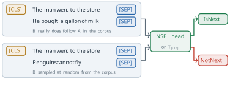
The two inputs of Figure 3.25 differ in one thing only: where B came from. That difference is the whole task. The objective looked well motivated, and the BERT paper reported that removing it lowered accuracy on several tasks (Devlin et al. 2019). A year later a replication reached the opposite conclusion. Liu and colleagues, at Facebook AI and the University of Washington, retrained BERT with a different recipe and called the result RoBERTa (Liu et al. 2019). When each input was filled with whole consecutive sentences up to 512 tokens, removing next sentence prediction matched or slightly improved accuracy on the downstream tasks. They suggested that the original comparison may have removed only the loss term, while the model without it was still trained on inputs packed as two segments. With inputs of whole consecutive sentences, masked language modelling already sees how sentences follow one another inside its window. Liu and colleagues also concluded more generally that BERT had been significantly undertrained. The episode is a small lesson in method: a component that a paper presents as useful is a hypothesis until someone trains the model with and without it under the same conditions. The ALBERT model of Lan and colleagues, discussed below, kept an inter-sentence objective but changed it to predicting whether two consecutive segments appear in the right order, a harder task than telling a real continuation from a random one (Lan et al. 2020).
Pre-training and fine-tuning
BERT was pre-trained on two corpora: the BooksCorpus of Zhu and colleagues, about 800 million words from unpublished books (Zhu et al. 2015), and the text of English Wikipedia, about 2,500 million words with lists, tables and headers removed (Devlin et al. 2019). Together they hold 3.3 billion words, and none of them carries a label. The targets of Equation 3.20 and the IsNext labels are made from the text itself, which is why the method is called self-supervised. Devlin and colleagues chose corpora of whole documents rather than shuffled sentences, so that long contiguous inputs could be extracted.
Training ran for one million steps with batches of 256 sequences. At 512 tokens a sequence that is 131,072 tokens, which the paper rounds to 128,000 tokens per batch. For 90 per cent of the steps the sequences were cut to 128 tokens, which is cheaper because the cost of attention grows with \(T^2\), and only the last 10 per cent used the full 512. BERT-Base was trained on four Cloud TPUs, sixteen TPU chips in all, and BERT-Large on sixteen Cloud TPUs, sixty-four chips, each for four days (Devlin et al. 2019). The paper counts one million steps of 128,000 tokens as about 40 passes over the 3.3 billion words. That count takes every batch at 512 tokens; with 90 per cent of the steps at 128 tokens, the model read about 43 billion tokens, nearer 13 passes (Exercise 1). For 2018 this was a large budget for a single model, and it was paid once.
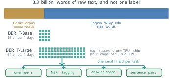
Figure 3.26 draws the corpus, the hardware and the reuse that follows. The second stage is where the payment is recovered. Fine-tuning starts from the pre-trained weights, adds a small output layer for one task, and trains every parameter on that task’s labelled examples. For a classification task with \(K\) classes, the output layer is one matrix \(W \in \mathbb{R}^{K \times D}\) applied to the output at [CLS], \[ P(y \mid x) = \operatorname{softmax}\left(W \mathbf{h}_{\text{[CLS]}}\right)_y , \qquad \mathcal{L}_{\text{task}} = -\log P\left(y^{\ast} \mid x\right) , \tag{3.25}\] where \(y^{\ast}\) is the correct label, and the gradient of \(\mathcal{L}_{\text{task}}\) flows through \(W\) into every block of the encoder. Devlin and colleagues recommended searching over batches of 16 or 32 examples, learning rates between \(2 \times 10^{-5}\) and \(5 \times 10^{-5}\), and two to four passes over the data, and reported that an hour on one TPU sufficed for every task in the paper (Devlin et al. 2019). The learning rate is small on purpose. The task should adjust the pre-trained weights, not overwrite them.
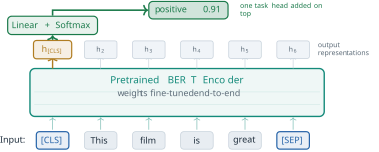
Figure 3.27 shows the case of sentiment, with \(K = 2\). At \(D = 768\) the head has \(2 \times 768 = 1{,}536\) parameters against about 110 million in the encoder, roughly one in seventy thousand. The probability 0.91 in the figure is an illustration, not a measured output, and it gives a loss of \(-\log 0.91 \approx 0.094\) if the review is in fact positive. The division of labour explains why a few thousand labelled examples can be enough. The encoder already maps a sentence to a vector that reflects its words, their order and their relations; the head only has to find the direction in that space that separates the two labels, and the small updates to the encoder make that direction cleaner.
Other tasks change only what is read from the top of the encoder. For named entity recognition, the same kind of head is applied to the output at every token, and each token gets its own label. For the question answering of the Stanford Question Answering Dataset (SQuAD) of Rajpurkar and colleagues (Rajpurkar et al. 2016), the question and the passage form segments A and B, and the answer is a span of the passage. Fine-tuning learns two vectors \(\mathbf{s}, \mathbf{e} \in \mathbb{R}^D\), and the probability that the span starts at passage position \(i\) is \[ P_{\text{start}}(i) = \frac{\exp\left(\mathbf{s}^{\top}\mathbf{h}_i\right)}{\sum_{j} \exp\left(\mathbf{s}^{\top}\mathbf{h}_j\right)} , \tag{3.26}\] with the same form for the end position using \(\mathbf{e}\). The predicted answer is the span from \(i\) to \(k \ge i\) that maximises \(\mathbf{s}^{\top}\mathbf{h}_i + \mathbf{e}^{\top}\mathbf{h}_k\) (Exercise 6). A task of this kind adds only \(2D\) parameters.
The idea of pre-training a language model and then fine-tuning it was not new in 2018. Howard and Ruder had fine-tuned a pre-trained recurrent language model for text classification, in a paper presented at the Annual Meeting of the Association for Computational Linguistics (ACL) that year (Howard and Ruder 2018). Radford and colleagues had done the same with a Transformer decoder trained from left to right (Radford et al. 2018). ELMo, by contrast, supplied fixed features to a separate model for each task. BERT’s contribution was the objective: the same recipe, with a representation that reads both directions in every layer.
What the results show
The paper reported new best results on eleven tasks, each from the same pre-trained weights with a different head. Table 3.2 lists six of them. The first is the General Language Understanding Evaluation (GLUE) of Wang and colleagues, an average over nine sentence and sentence-pair tasks (Wang et al. 2019), and the second, the Multi-Genre Natural Language Inference corpus (MultiNLI), is the largest of those nine. Next come the two versions of SQuAD, the second of which adds questions that have no answer in the passage (Rajpurkar et al. 2018). The Situations With Adversarial Generations (SWAG) test of Zellers and colleagues asks which of four endings most plausibly continues a sentence (Zellers et al. 2018). The last row is the named entity recognition task of the 2003 Conference on Computational Natural Language Learning (CoNLL-2003) (Tjong Kim Sang and De Meulder 2003).
| Benchmark | Measure | Best earlier result | BERT-Large | Change |
|---|---|---|---|---|
| GLUE | score | 72.8 | 80.5 | +7.7 |
| MultiNLI | accuracy | 82.1 | 86.7 | +4.6 |
| SQuAD 1.1 | test F1 | 91.7 | 93.2 | +1.5 |
| SQuAD 2.0 | test F1 | 78.0 | 83.1 | +5.1 |
| SWAG | test accuracy | 78.0 (GPT) | 86.3 | +8.3 |
| CoNLL-2003 NER | test F1 | 93.1 | 92.8 | −0.3 |
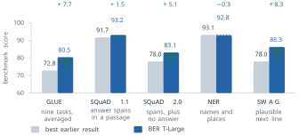
Figure 3.28 draws five of the rows. The gains are large where the task needs a sentence pair or a passage to be read as a whole: 7.7 points on GLUE and 8.3 on SWAG. They are small where the earlier systems were already at the level of human annotators, as on SQuAD 1.1, where the best earlier system scored 91.7 against a human score of 91.2. On CoNLL-2003 BERT-Large did not beat the best earlier system, which was 0.3 points ahead on the test set, though it was close. The table should not be read as saying that BERT won everywhere. It shows that one pre-trained model, with a small head per task, was at or near the best result on every task tried, where previous best results each came from a system designed for its task.
How much of the gain is due to reading in both directions, and how much to size and data? The comparison with GPT controls size but not data. BERT-Base has the size of GPT and scored 79.6 on the average of the GLUE tasks against GPT’s 75.1, but GPT was trained on the BooksCorpus alone, and BERT on that corpus and Wikipedia (Devlin et al. 2019). The cleaner evidence is the paper’s ablation, which keeps BERT-Base, its data and its training fixed and changes only the objective. Trained left to right, without next sentence prediction, the model dropped from 87.9 to 77.8 F1 on SQuAD 1.1 and from 86.5 to 77.5 on the paraphrase task of the Microsoft Research Paraphrase Corpus (MRPC), against the bidirectional model also trained without next sentence prediction. Adding a randomly initialised bidirectional LSTM on top of the left-to-right model during fine-tuning raised SQuAD to 84.9, still short of the deeply bidirectional model, and left the GLUE scores unchanged or lower. Within one paper, at one size, on one corpus, the direction of reading accounts for most of the difference on the tasks that need context from the right. BERT-Large adds size on top of that, and its numbers in Table 3.2 owe something to both.
Successors and limits
Within a year several models changed the recipe while keeping the encoder. RoBERTa, described above, showed that more data, longer training, larger batches and the removal of next sentence prediction gave a better model of the same shape (Liu et al. 2019). DistilBERT, from Sanh and colleagues at Hugging Face, presented at a NeurIPS workshop in 2019, trained a six-layer student network to reproduce the output distributions of BERT-Base, a technique called knowledge distillation that Hinton, Vinyals and Dean had described in 2015 (Hinton et al. 2015). The student was 40 per cent smaller and 60 per cent faster, and kept 97 per cent of BERT’s language understanding performance (Sanh et al. 2019). ALBERT, from Lan and colleagues at Google and the Toyota Technological Institute at Chicago, presented at the International Conference on Learning Representations (ICLR) in 2020, attacked the parameter count directly (Lan et al. 2020). It shares one set of block parameters across all layers, and it factorises the token embedding into a \(|V| \times E\) table and an \(E \times D\) projection with \(E\) much smaller than \(D\). At \(|V| = 30{,}000\), \(D = 1024\) and \(E = 128\) the factorisation alone replaces about 30.7 million embedding parameters by about 4.0 million (Exercise 4). Each of the three answers a different question: how to train the model better, how to run it more cheaply, and how to store it in fewer parameters.
The limits of BERT follow from its design. The first is that it does not generate text. Its output at each position is a prediction for a hidden token given the rest of a fixed-length input, and there is no procedure in it for producing a sequence one token at a time. The second is hidden in Equation 3.20. The loss treats the masked tokens as separately predictable given \(\tilde{x}\), so the model never learns a joint distribution over two hidden tokens. In [MASK] [MASK] is a large city, the pairs New York and Los Angeles both fit, and predicting each position on its own can favour a mixture of the two that fits neither (Exercise 5). The third is the remaining mismatch of the corruption rule Equation 3.21: 12 per cent of the pre-training input is a token that never appears afterwards. The fourth is length. The table of learned positions stops at 512, and the cost of each attention layer grows as \(T^2\). The fifth is practical. Every task needs its own fine-tuning run and its own copy of the 110 or 340 million weights.
Each limit is the price of a choice that was correct for understanding. Reading both directions is what makes generation impossible, since a sentence being written has no right-hand side to read. Section 3.3 takes the other branch of the family. The GPT models keep only the decoder, with the causal mask of Equation 3.15, and train it on the objective that BERT set aside, predicting the next token. They give up half of the grid in Figure 3.23 and gain the ability to write.
Exercises
Take a pre-training sequence of \(T = 512\) tokens and the rule of Equation 3.21 with selection probability 0.15. (a) Find the expected number of chosen positions and the expected numbers that become [MASK], become a random token, and stay unchanged. (b) A left-to-right model trained by Equation 3.19 on the same sequence makes one prediction per position. What fraction of its predictions does masked language modelling make? (c) Treating a token as a word, show that one million steps of 128,000 tokens is about 40 passes over 3.3 billion words. (d) Batches hold 256 sequences. Recompute the number of passes when 90 per cent of the steps use sequences of 128 tokens and the rest use 512.
- Derive Equation 3.23. (b) Compute the number of open pairs and the ratio \(2T/(T+1)\) for \(T = 6\), \(T = 128\) and \(T = 512\). (c) In the causal grid, which query row loses the most context and which loses none? Explain why the first words of a sentence are the ones a left-to-right model represents with the least evidence.
This exercise makes the leak of the opening part precise. (a) An encoder with no mask is trained to predict \(x_{i+1}\) from its output at position \(i\). Describe weights for a single self-attention layer under which the output at \(i\) is close to the embedding of \(x_{i+1}\), and explain why the loss can then be driven towards zero without learning anything about language. (b) Now the target at position \(i\) is \(x_i\) itself. Explain why the residual connection alone lets \(x_i\) reach the output at \(i\). Then remove the residual path at \(i\) and let the mask close only the diagonal, so that no position attends to itself. Show that with two layers the token \(x_i\) still reaches the output at \(i\).
- Show that with the causal mask of Equation 3.15 and the target \(x_{i+1}\), no stack of any depth lets \(x_{i+1}\) reach the output at \(i\). (d) Explain how Definition 3.7 avoids the leak without any mask on the attention.
Count parameters, including every bias and the gain and bias of every layer normalisation, and ignoring the classifier used for next sentence prediction. Use \(|V| = 30{,}000\), 512 positions, two segments, and \(d_{\text{ff}} = 4D\). Recall from §3.1 that the attention of Definition 3.2 has four \(D \times D\) projections (\(W^{(Q)}\), \(W^{(K)}\), \(W^{(V)}\) and \(W^{(O)}\) over all heads together), the network of Definition 3.3 has two linear maps, from \(D\) to \(4D\) and back, and a layer normalisation
- has a gain and a bias of width \(D\). (a) Count the parameters of the input layer of Equation 3.22, with its layer normalisation, for BERT-Base. (b) Count one encoder block of Equation 3.14 at \(D = 768\). (c) Add the two for \(N = 12\) and compare with the reported 110 million. (d) Repeat for BERT-Large and compare with 340 million. (e) For ALBERT’s factorised embedding with \(E = 128\) and \(D = 1024\), count the parameters of the \(|V| \times E\) table and the \(E \times D\) projection, and compare with a \(|V| \times D\) table.
The loss Equation 3.20 predicts each masked token separately. Suppose that, given [MASK] [MASK] is a large city, the only continuations in the data are New York and Los Angeles, each with probability 0.5. (a) Write the marginal distribution of each masked position. (b) Under the product of the two marginals, what probability goes to pairs that never occur? (c) If each position is filled with its most probable token and ties are broken independently, how likely is an impossible pair? (d) Show that a model trained by the chain rule Equation 1.5, which predicts the second token given the first, does not have this problem, and explain why that matters for generation.
- In Figure 3.27 the head gives positive the probability 0.91. Compute the loss of Equation 3.25 when the true label is positive, and the gradient of the loss with respect to the two logits. (b) For a SQuAD passage of five tokens, the start scores \(\mathbf{s}^{\top}\mathbf{h}_i\) are \((1.0, 3.0, 0.5, 2.0, 0.2)\) and the end scores \(\mathbf{e}^{\top}\mathbf{h}_k\) are \((0.1, 0.5, 2.5, 1.0, 3.0)\). Compute \(P_{\text{start}}(2)\) from Equation 3.26. (c) Find the span \((i, k)\) with \(k \ge i\) that maximises \(\mathbf{s}^{\top}\mathbf{h}_i + \mathbf{e}^{\top}\mathbf{h}_k\). (d) Repeat (c) when an answer may be at most three tokens long. (e) SQuAD 2.0 allows a question to have no answer. Propose a way to use the output at [CLS] to decide that a passage contains none.
This exercise relates Equation 3.24 to Equation 1.24. (a) In a single attention step, let the output at bank be \(\alpha\,\mathbf{v}_{\text{bank}} + (1 - \alpha)\,\mathbf{v}_c\), where \(\mathbf{v}_c\) is the value vector of the one context word. Take \(\mathbf{v}_{\text{bank}} = (1, 1)\), \(\mathbf{v}_{\text{money}} = (2, 0)\), \(\mathbf{v}_{\text{river}} = (0, 2)\) and \(\alpha = 0.5\). Compute the two outputs and their cosine, Equation 1.10, and compare with the cosine of a static vector with itself. (b) Design an experiment with a pre-trained BERT model that measures whether it separates the two senses of bank: which sentences, which vectors, which statistic, and what result would count against the claim. (c) Explain why She went to the bank is a useful control.
- How many parameters does the learned position table of BERT-Base hold, and how many in BERT-Large? (b) A document of 600 tokens must be classified. Describe two ways to apply BERT to it, and say what each loses. (c) Would replacing the learned table by the sinusoids of Equation 3.1 let a BERT model trained on 512 positions read 600 tokens well? Argue from what the model saw in training, not only from what the encoding can represent.
3.3 GPT: Predicting What Comes Next
Section 3.2 ended with a promise. The GPT models keep only the decoder of §3.1, with the causal mask of Equation 3.15, under which each position attends only to itself and the positions before it, and train it on the objective that BERT set aside, predicting the next token. They give up half of the grid in Figure 3.23 and gain the ability to write. This section keeps that promise, but it starts from a different place. The loss of half the grid is real, and Equation 3.23 measured it. The reason the decoder-only branch became the main line of the field lies elsewhere, in a cost of BERT that §3.2 named only in its last paragraph of limits: every task needs its own fine-tuning run and its own copy of the weights.
Consider what that cost looks like in practice. A system that translates needs a labelled set of sentence pairs, a fine-tuning run and a copy of the weights that translates. A system that summarises needs articles paired with their summaries, a second run and a second copy. A sentiment classifier needs rated reviews, such as the 67,000 sentences of the Stanford Sentiment Treebank used in GLUE (Wang et al. 2019), a third run and a third copy. BERT improved eleven benchmarks at once, and it did so with eleven fine-tuning runs. The cost grows linearly with the number of tasks, as Figure 3.29 shows, and, when each model is fine-tuned in full, nothing in its right-hand column is shared (§5.2 returns to methods that share most of the weights). Worse, the set of tasks is fixed when the labels are collected. A request that nobody anticipated, such as explain this code review, has no dataset behind it, and under this contract the system cannot serve it until one is built. The problem this section solves can be stated in one line: one model, many tasks, with the task chosen when the model is used and no new labels.
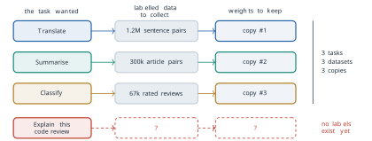
Where the task lived
To see why this is hard, we ask where the task is represented in the models of §3.1. In the encoder-decoder Transformer the source sentence enters the encoder, and the decoder reads the encoder’s output through cross-attention, Equation 3.16, whose keys and values come from the encoder and whose queries come from the decoder. That sub-layer carries the data, the French sentence to be translated. It also carries the task. The model translates because one sentence arrives on one channel and another leaves on the other. Nothing in the text says translate. The task is built into the shape of the network and into the pairs it was trained on, and that is why each task needs its own network.
Now delete the encoder. The cross-attention sub-layer of Definition 3.6 has no keys and no values to read, since there is no source to compute them from, so it must go as well. This is not a design choice. A sub-layer with no input computes nothing. What remains is a stack of blocks with two sub-layers each, masked self-attention and a feed-forward network, reading one stream of tokens. Figure 3.30 shows the result.
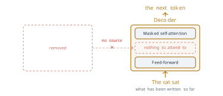
With one input channel there is only one place left for the task: the token stream itself. The instruction becomes words at the start of the stream, followed by the input it applies to, followed by the text the model is to produce. Figure 3.31 shows three tasks written this way. In the first row the words Translate to French : precede the cat sat, and the model is to continue with le chat s’assit. In the second row Sentiment of this review : precedes dull and slow, and the continuation is negative. In the third, Answer the question : precedes capital of Japan, and the continuation is Tokyo. The model is the same in all three rows, and the only difference is in the first band of words.
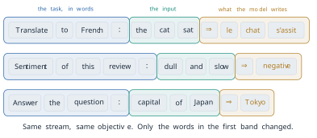
Once the task is written in the text, every task becomes the same task: continue the stream. The unanticipated request of the opening is then a different set of words in the first band, with no new dataset and no second model. The idea looks at first like a relabelling of the problem. Its value lies in what it does to training. If every task is continuation, a model needs only to be good at continuation, and continuation can be learned from text that nobody labelled.
Definition 3.9 (Definition) A prompt is the text given to a language model before it begins to generate. It may contain an instruction, the input the instruction applies to, and examples of the task. The model’s output is a continuation of the prompt.
One objective and free labels
A model that continues text is trained to predict each token from the tokens before it. For a sequence \(x_1, \ldots, x_T\) and parameters \(\theta\), the training objective is the log-likelihood \[ L(\theta) = \sum_{i=2}^{T} \log P\left(x_i \mid x_{<i} ; \theta\right) , \tag{3.27}\] which is maximised, summed over every sequence of the corpus. The sum starts at the second token because the first has no prefix to be predicted from. The first token is given. The conditioning bar carries the whole rule. Position \(i\) is predicted from everything to its left and from nothing to its right, which is the causal rule of Equation 3.15. Equation 3.27 is the negative of the loss Equation 3.19 of §3.1 with the source sentence \(x\) of that equation removed, since there is no longer a source. By the chain rule, Equation 1.5, the sum of the log-probabilities of the tokens is the log-probability of the whole sequence given its first token, so maximising Equation 3.27 is maximising the probability the model gives to the text of the corpus.
Definition 3.10 (Definition) A causal language model, or decoder-only language model, is a stack of decoder blocks without cross-attention, trained by Equation 3.27 to predict every token of a text from the tokens before it. A generative pre-trained Transformer (GPT) is a causal language model of this kind that is pre-trained on a large unlabelled corpus and then used, with or without further training, for other tasks.
The labels of Equation 3.27 cost nothing. Take the sentence The cat sat on the mat, six tokens with no human annotation. With The as context the target is cat. With The cat the target is sat. With The cat sat it is on, and so on to mat. Figure 3.32 draws the five examples as a staircase. In general a sequence of \(T\) tokens gives \[ T - 1 \text{ labelled examples} , \tag{3.28}\] one for each position after the first, so a page of 1,000 tokens gives 999. Every document is its own answer key. This is the self-supervision of §1.2 carried to its limit. There, the skip-gram model of Equation 1.11 took its targets from a window that slid along the text, as Figure 1.7 showed, so that the training pairs were parts of the input. Equation 3.27 does the same with a window that contains the whole prefix and a target that is always the next token. In both cases no annotation budget limits the amount of training data. Only the amount of text does.
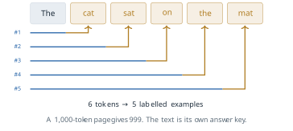
A common objection is that predicting the next word is shallow, a matter of autocompletion. Four examples show what doing it well requires. In The keys to the cabinet ___ the next word is are, not is, and the model must know that the subject is keys across the intervening phrase. That is grammar. In The capital of Australia is ___ the next word is Canberra, which is a fact about the world. In 17 + 25 = ___ it is 42, which is arithmetic. In Sara lent Tom her notes. He thanked ___ it is her, and the model must resolve that he is Tom and that the person thanked is Sara, across a sentence boundary. None of these was set up as a training task. Each is something a model must acquire to reduce the loss of Equation 3.27 on text where such cases occur. The argument says what the objective rewards. Whether a given model acquires these abilities, and at what size, is an empirical question, and the results below and in Chapter 4 answer it in part.
The chain rule has a second consequence, which §3.2 left open. The masked language model of Equation 3.20 predicts each hidden token separately given the corrupted input, so it has no way to represent a joint distribution over two hidden tokens. Given [MASK] [MASK] is a large city, with New York and Los Angeles equally likely, the two separate predictions can favour New Angeles, which never occurs (Exercise 5 of §3.2). Equation 3.27 has no such gap. It predicts the second token given the first, so once New is chosen the distribution for the next position puts its mass on York. The product of the conditionals is the joint distribution of the text given its first token, exactly, by Equation 1.5. That is why a causal model can generate a sequence one token at a time and a masked model cannot.
The price is the one §3.2 measured. Under Equation 3.15, row \(i\) of the attention grid has \(i\) open cells, so by Equation 3.23 a sequence of length \(T\) uses \(T(T+1)/2\) of the \(T^2\) pairs, and for long inputs almost exactly half. The loss falls on the early tokens. The representation of the first word of a text is computed from that word alone, while the last word sees everything. For a model that must understand a text already written this is a real handicap. It is one likely reason that BERT-Base scored higher than GPT-1 on GLUE at equal size, although §3.2 showed that the two also differed in their training data. For a model that writes, the right-hand half of the grid holds words that do not exist yet, so nothing usable is lost.
The decoder-only block and stack
With cross-attention gone, the block has two sub-layers, each with its own residual connection, Equation 3.10, and its own layer normalisation, 1. Figure 3.33 draws it lying on its side. Tokens enter on the left and pass through masked self-attention, which is the multi-head attention of Definition 3.2 with the mask of Equation 3.15, and then through the position-wise feed-forward network of Definition 3.3. In the decoder block of Definition 3.6, cross-attention sat between these two sub-layers. Here nothing does.
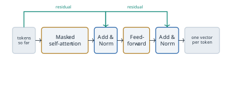
The figure shows the block in the arrangement of §3.1 and of GPT-1, with each normalisation after its residual addition, as in Equation 3.13. GPT-2 changed one detail that matters for depth. Radford and colleagues moved each layer normalisation to the input of its sub-layer and added one more after the last block (Radford et al. 2019). Below, \(\operatorname{LN}\) is LayerNorm (Equation 3.12) and \(\operatorname{MaskedMHA}\) is masked multi-head attention. Writing \(\mathbf{H}\) for the matrix of the \(T\) position vectors entering a block, the block computes \[ \tilde{\mathbf{H}} = \mathbf{H} + \operatorname{MaskedMHA}\left(\operatorname{LN}(\mathbf{H})\right), \qquad \mathbf{H}' = \tilde{\mathbf{H}} + \operatorname{FFN}\left(\operatorname{LN}(\tilde{\mathbf{H}})\right) . \tag{3.29}\] The difference from Equation 3.13 is where the normalisation sits relative to the residual path. In Equation 3.13 the sum \(\mathbf{x} + \operatorname{Sublayer}(\mathbf{x})\) is normalised, so the residual stream itself is rescaled at every sub-layer. The Jacobian of a block is then the Jacobian of the normalisation multiplied by \(I + \partial F / \partial \mathbf{x}\) from Equation 3.11. In Equation 3.29 the stream \(\mathbf{H}\) is never normalised. Each block adds a correction to it, and the Jacobian of a stack of \(N\) such blocks is a product of \(N\) factors of the form \(I + \partial F_n / \partial \mathbf{H}\). Expanded, that product contains the identity as one of its terms, so a gradient can reach the first block from the last without passing through any normalisation. Xiong and colleagues analysed the two arrangements at the International Conference on Machine Learning (ICML) in 2020 (Xiong et al. 2020). They proved that with normalisation after the residual addition the expected gradients near the output are large at initialisation, which is why such models need a period of warm-up with a small learning rate, and they showed that with normalisation at the input the warm-up can be removed. The arrangement of Equation 3.29, often called pre-norm, is the one used in the deeper models that followed.
The whole model, from bottom to top, is drawn in Figure 3.34. Each token \(x_i\) is mapped to a vector, and a vector for its position is added, \[ \mathbf{h}^{(0)}_i = \mathbf{e}_{x_i} + \mathbf{p}_i , \tag{3.30}\] where \(\mathbf{e}_{x_i}\) is the row of the embedding matrix \(W_E \in \mathbb{R}^{|V| \times D}\) for the token (written \(\mathbf{w}_{x_t}\) in §3.2, and not to be confused with the one-hot vector \(\mathbf{e}_i\) of §1.1) and \(\mathbf{p}_i\) is row \(i\) of a position matrix \(W_P \in \mathbb{R}^{n_{\text{ctx}} \times D}\). Both are learned. The position vectors are not the sinusoids of Definition 3.1 but ordinary parameters, as in BERT. The trade-off is the one §3.2 described. A learned table has no row for a position it never saw, so the model cannot be run on a sequence longer than its context length \(n_{\text{ctx}}\), while Equation 3.1 gives a vector for any position. GPT is trained at a fixed \(n_{\text{ctx}}\) and is never run beyond it, so this advantage of the sinusoids is never used, and Vaswani and colleagues had found the two encodings nearly equal on the lengths they tested. The vectors then pass through \(N\) blocks of Equation 3.29, and the output at position \(i\) is turned into a distribution over the vocabulary, \[ \boldsymbol{\ell}_i = \operatorname{LN}\left(\mathbf{h}^{(N)}_i\right) W_E^{\top} , \qquad P\left(x_{i+1} = w \mid x_{\le i}\right) = \frac{\exp(\ell_{i,w})}{\sum_{w' \in V} \exp(\ell_{i,w'})} , \tag{3.31}\] which is the output softmax of Equation 3.17 with the embedding matrix reused as the output layer. GPT-1 already tied the two matrices in this way (Radford et al. 2018).
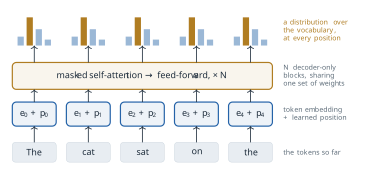
The figure is read in two directions. Down a column it follows one token: an embedding, a position, a path up through the blocks, and a prediction at the top. Across, there is one band of blocks, not five. Every column passes through the same weights, so there is one model applied at every position at once. Training joins the two readings. The distribution in column \(i\) is scored against the token in column \(i + 1\), so the five columns of Figure 3.34 carry four terms of Equation 3.27, with targets cat, sat, on and the, and the fifth column predicts a word that is not yet there. As with teacher forcing in §3.1 (Figure 3.17), one forward pass computes every term of the loss for a whole sequence, because the mask makes the output at \(i\) independent of every input after \(i\).
The three models of the series are compared in Table 3.3. The block is the same in all three, apart from the move to pre-norm in GPT-2. What changes is the depth \(N\), the width \(D\), the context length and the amount of text. Exercise 3 checks, for GPT-1 and GPT-3, that the parameter counts follow from these numbers.
| GPT-1 | GPT-2 | GPT-3 | |
|---|---|---|---|
| Published | June 2018 | February 2019 | May 2020 |
| Blocks \(N\) | 12 | 48 | 96 |
| Width \(D\) | 768 | 1,600 | 12,288 |
| Context \(n_{\text{ctx}}\) | 512 | 1,024 | 2,048 |
| Vocabulary | about 40,000 | 50,257 | 50,257 |
| Parameters | 117 million | 1.5 billion | 175 billion |
| Training text | BooksCorpus, about 7,000 books | WebText, 40 GB | 300 billion tokens |
Three papers, three assumptions
The series was published by OpenAI in three steps, and each step changed the assumption about how a pre-trained model should be given a task. Figure 3.35 places the three models on a logarithmic axis of parameters. A linear axis would flatten the first two into the baseline.
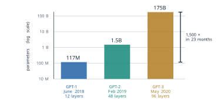
Alec Radford, Karthik Narasimhan, Tim Salimans and Ilya Sutskever described the first model in an OpenAI report of June 2018, Improving Language Understanding by Generative Pre-Training (Radford et al. 2018). They pre-trained a twelve-block decoder by Equation 3.27 on BooksCorpus, a collection of unpublished books assembled by Zhu and colleagues (Zhu et al. 2015) (over 7,000 distinct books by Radford and colleagues’ count), chosen because its long stretches of continuous text suit a model that conditions on the whole prefix. They assumed that unlabelled text carries enough signal to pre-train a general model, and that each task still needs a small labelled set. For a task with inputs \(\mathbf{x}\) and label \(y\), a linear layer \(W_y\) on the final output gives \(P(y \mid \mathbf{x}) = \operatorname{softmax}(\mathbf{h}^{(N)}_m W_y)\), where \(m\) is the last position, and fine-tuning maximises (a log-likelihood, so the negative of a loss such as §3.2’s) \[ L_{\text{task}}(\theta) = \sum_{(\mathbf{x}, y)} \log P\left(y \mid \mathbf{x}\right) + \lambda \, L(\theta) , \tag{3.32}\] in which the second term is Equation 3.27 on the task’s own text, kept as an auxiliary objective with \(\lambda = 0.5\). Structured inputs, such as the two sentences of an entailment pair, were written as one sequence with delimiter tokens between the parts, so that the pre-trained model could read them without a change of architecture. The input was already being turned into a single stream. The task, however, still lived in \(W_y\) and in the labelled set, one of each per task. This was the model whose size BERT-Base was chosen to match (§3.2).
Eight months later Radford, Jeffrey Wu, Rewon Child, David Luan, Dario Amodei and Sutskever published Language Models are Unsupervised Multitask Learners (Radford et al. 2019). The title states the assumption. A corpus that is large and varied enough already contains demonstrations of many tasks, because people translate, summarise and answer questions in ordinary text. A model of the form \(P(\text{output} \mid \text{input})\) for one task then becomes a model of the form \(P(\text{output} \mid \text{input}, \text{task})\), with the task given in words, and a language model that predicts the corpus well has learned to do the tasks it contains. To get such a corpus they collected WebText, about 8 million documents and 40 GB of text from pages linked from the Reddit forum in posts that had received at least three karma, Reddit’s net count of votes, a filter for pages that people had found worth reading. The largest model had 1.5 billion parameters and 48 blocks. It was evaluated with no fine-tuning and no examples, which is called the zero-shot setting. On the conversational question answering dataset CoQA it reached 55 F1, matching or exceeding three of four baseline systems without using their more than 127,000 training examples (Radford et al. 2019). The bet worked in part. GPT-2 could perform many tasks from a description alone, recognisably but well below fine-tuned models on most of them.
In May 2020 Tom Brown and thirty colleagues at OpenAI described GPT-3, Language Models are Few-Shot Learners, presented at the Conference on Neural Information Processing Systems (NeurIPS) that year (Brown et al. 2020). The model had 175 billion parameters in 96 blocks, about 1,500 times GPT-1, and was trained on 300 billion tokens. The assumption moved once more. GPT-2 described the task in words. GPT-3 also showed the model a few solved examples of the task in the prompt, and changed none of its weights.
Definition 3.11 (Definition) In-context learning is the change in a language model’s behaviour produced by the content of its prompt alone, with no change to its parameters. In the zero-shot setting the prompt describes the task. In the one-shot and few-shot settings it also contains one or several solved examples of the task, called demonstrations.
A few-shot prompt for sentiment classification appears in Figure 3.36. The first line is the instruction, Classify the sentiment as positive or negative. Two demonstrations follow, each an input, an arrow and the correct label: This film was brilliant. is positive and Dull and forgettable. is negative. The last line is the query, I loved every minute., with its label left off. For the model nothing special happens. It continues the text, and the continuation is positive. No gradient is computed and the weights are the same before and after. In this sense the prompt acts as a program. It selects one of the behaviours the model already has, using nothing but text, and the unanticipated request of the opening is served in the same way.
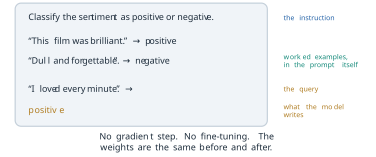
Whether demonstrations help is a measurable question. Brown and colleagues tested GPT-3 on TriviaQA, a benchmark of trivia questions answered without a supporting document. With the task described and no examples the 175-billion-parameter model answered 64.3 per cent correctly. With one demonstration it answered 68.0 per cent, and with 64 demonstrations 71.2 per cent (Brown et al. 2020). Figure 3.37 shows the three results. The gain is 3.7 points from one example and 6.9 points from sixty-four. The weights are identical in all three bars. Only the prompt changed.
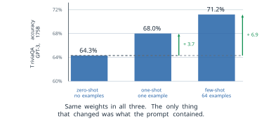
Two cautions keep the result in proportion. The first is that in-context learning was not designed. Brown and colleagues found that the gap between the zero-shot and few-shot results often grew with the size of the model, so the ability was observed in the largest models rather than built into them, and why it appears is a question Chapter 4 takes up. The second is that the assumption behind it, that a few examples select a behaviour already present in the weights, is also its limit. A task that the corpus never demonstrated, or one whose demonstrations contradict what the corpus usually does, is not learned from a handful of examples in the way that fine-tuning would learn it.
From a distribution to a token
The model of Equation 3.31 gives a distribution at every position. A distribution is not yet text. At generation time something outside the network must choose one token, append it, and run the model again, in the loop of Figure 3.18. Section 3.1 described the loop. It did not say how the choice is made, and the choice changes the text a model writes as much as many changes to its training do. The rule that makes the choice is called a decoding method.
We use one small example throughout. After the prompt the weather today is, suppose four candidate tokens remain, with logits \(\ell = 3\) for sunny, 2 for cold, 1 for grey and 0 for volcanic. The softmax of Equation 3.17 gives \(e^3 = 20.09\), \(e^2 = 7.39\), \(e^1 = 2.72\) and \(e^0 = 1\), with sum 31.19, so the probabilities are \[ 0.644, \quad 0.237, \quad 0.087, \quad 0.032 . \tag{3.33}\]
The simplest rule is greedy decoding: at every step take the most probable token. It produces sunny here, and at first it often produces sensible text. Figure 3.38 shows what tends to happen next. From the prompt The best thing is, greedy choices give the battery life ., and then The battery life . again, and from then on the same phrase. The mechanism is simple. Greedy decoding is deterministic, so the same context always produces the same next token. Once the last few tokens repeat an earlier stretch, the model sees a context much like the one it saw before, and the most probable continuation is again the one it chose before. Each repetition makes the context more repetitive and the repeated continuation more probable. Holtzman and colleagues measured this feedback in a model of the GPT-2 family: the probability that the model gave to repeating a phrase rose with each repetition (Holtzman et al. 2020). For a model that reads only its last \(n_{\text{ctx}}\) tokens the outcome can be stated exactly. The context is then one of finitely many sequences, a deterministic rule on a finite set of states must eventually revisit a state, and from that point the output is periodic (Exercise 6). The period need not be short, but in practice loops of a few tokens are common.
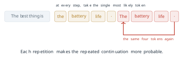
The loop is a symptom of a deeper mismatch. Holtzman and colleagues showed that the text people write is not the text a language model finds most probable. Human text gives its words a probability that varies from one word to the next and is often well below the maximum. Maximisation, by contrast, produces bland and repetitive text (Holtzman et al. 2020). The remedy is to sample, drawing each token at random from the distribution. Sampling from the full distribution, however, sometimes draws from the long tail of unlikely tokens, and one bad draw can derail everything after it. The methods below control how much of the distribution sampling may use.
The first reshapes the whole distribution. Dividing every logit by a temperature \(\tau > 0\) before the softmax gives \[ P_\tau(w) = \frac{\exp(\ell_w / \tau)}{\sum_{w' \in V} \exp(\ell_{w'} / \tau)} . \tag{3.34}\] We write the temperature as \(\tau\), as in Exercise 8 of §3.1, to keep \(T\) for the length of a sequence. The name comes from statistical physics, where the Boltzmann distribution \(\exp(-E/\tau)\) over the energies of states becomes more concentrated as the temperature falls; Ackley, Hinton and Sejnowski used it with this meaning in their Boltzmann machine of 1985 (Ackley et al. 1985). At \(\tau = 1\), Equation 3.34 is the ordinary softmax. A temperature below 1 divides by a number less than one, which spreads the logits apart and sharpens the distribution. A temperature above 1 pulls them together and flattens it. In the limit \(\tau \to 0\) all the mass goes to the largest logit, which is greedy decoding, and as \(\tau \to \infty\) the distribution becomes uniform (Exercise 4).
The worked example makes this concrete. At \(\tau = 0.5\) the logits \(3, 2, 1, 0\) become \(6, 4, 2, 0\), and the gaps between them double before any exponential is taken. The exponentials are \(e^6 = 403.4\), \(e^4 = 54.6\), \(e^2 = 7.4\) and \(e^0 = 1\), with sum 466.4, so \[ P_{0.5}(\textit{sunny}) = \frac{403.4}{466.4} = 0.865 . \tag{3.35}\] Halving the temperature raises the top token from 0.644 to 0.865, as Figure 3.39 shows. Table 3.4 gives the full distribution at three temperatures. At \(\tau = 1.5\) the top token falls to 0.523, and volcanic rises from 0.032 to 0.071, more than doubling (Figure 3.40). A low temperature makes sampling safer and more repetitive. A high one makes it more varied and more likely to say something absurd.
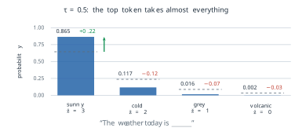
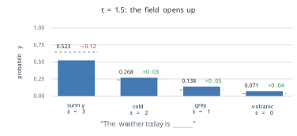
| sunny | cold | grey | volcanic | |
|---|---|---|---|---|
| logit \(\ell\) | 3 | 2 | 1 | 0 |
| \(\tau = 0.5\) | 0.865 | 0.117 | 0.016 | 0.002 |
| \(\tau = 1\) | 0.644 | 0.237 | 0.087 | 0.032 |
| \(\tau = 1.5\) | 0.523 | 0.268 | 0.138 | 0.071 |
The second family of methods removes the tail instead of reshaping everything. In top-\(k\) sampling the \(k\) most probable tokens are kept, their probabilities are renormalised to sum to 1, and the token is sampled from them. Fan, Lewis and Dauphin used it with \(k = 10\) for story generation, in a paper presented at the Annual Meeting of the Association for Computational Linguistics (ACL) in 2018 (Fan et al. 2018). Its weakness is that \(k\) is a count, and the right count changes from one position to the next. Figure 3.41 shows two distributions over eight candidates. In the first the model is confident, with probabilities \(0.60, 0.20, 0.10, 0.05, 0.02, 0.015, 0.01, 0.005\). In the second it is not, with \(0.18, 0.16, 0.15, 0.13, 0.12, 0.10, 0.09, 0.07\). With \(k = 3\) the first keeps 90 per cent of its mass, which is reasonable. The second keeps 49 per cent and discards half of what the model considered plausible. The same \(k\) behaves very differently, and nothing in the rule can tell which case it is in.
Holtzman, Buys, Du, Forbes and Choi proposed fixing the amount of probability instead of the count, in The Curious Case of Neural Text Degeneration, presented at the International Conference on Learning Representations (ICLR) in 2020 (Holtzman et al. 2020). Their assumption was that the reliable part of a distribution is a head of variable size, not a fixed number of tokens.
Definition 3.12 (Definition) For a threshold \(p \in (0, 1]\), the nucleus \(V^{(p)}\) is the smallest set of tokens, taken in order of decreasing probability, whose total probability reaches \(p\), \[ \sum_{x \in V^{(p)}} P(x) \ge p . \tag{3.36}\] Nucleus sampling, or top-\(p\) sampling, renormalises the probabilities over \(V^{(p)}\) and samples the next token from them.
On the two distributions of Figure 3.41 with \(p = 0.90\), the running totals of the confident row are \(0.60, 0.80, 0.90\), so the nucleus has three tokens. The running totals of the flat row are \(0.18, 0.34, 0.49, 0.62, 0.74, 0.84, 0.93\), so it has seven, holding 93 per cent of the mass. The cut follows the shape of the distribution because the quantity it measures, the accumulated probability, is the one that changes from position to position. Top-\(k\) fixes the quantity that does not. In practice temperature and a truncation rule are often combined, the logits divided by \(\tau\) first and the tail cut afterwards.
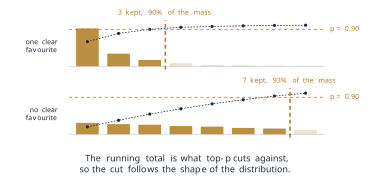
What the objective does not measure
The objective Equation 3.27 rewards a model for giving high probability to the text of its corpus. It contains no term for whether a continuation is true, and none for whether it is useful to the person who wrote the prompt. A model that fits its corpus perfectly reproduces the corpus’s distribution, including its errors. Take the prompt The capital of Australia is. The continuation Canberra is true, and Sydney is false but common, since Sydney appears near Australia in far more text. A well-trained model will usually prefer Canberra, because most text that completes this exact phrase is correct. But the preference comes from the corpus being right, not from the objective asking for truth. Where a corpus is often wrong, the objective rewards the model for being wrong in the same way. Figure 3.42 sets out the two questions the objective can ask of a continuation and the one it cannot.
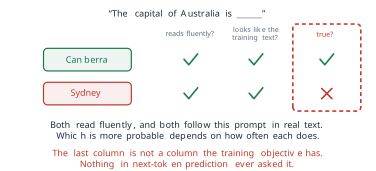
Lin, Hilton and Evans measured this directly in TruthfulQA, presented at ACL in 2022 (Lin et al. 2022). They wrote 817 questions in 38 categories, such as health, law and finance, chosen so that a common human misconception gives a false answer. The best model they tested was truthful on 58 per cent of the questions, against 94 per cent for people. The largest models were generally the least truthful, the reverse of the trend on most benchmarks. The authors noted that this is what one would expect if the false answers are learned from the training text: a larger model imitates its corpus more faithfully, misconceptions included. Fluency and plausibility are what the objective measures, and truth is not among them.
Other limits follow from the design of the earlier subsections. Generation costs one pass through the stack for every token produced, since each choice must be made before the next can be computed. The learned positions of Equation 3.30 stop at \(n_{\text{ctx}}\), and the attention cost of each layer grows as \(T^2\). The causal mask gives the early tokens of a text the least context. As §3.1 noted, training always conditions on the true prefix, while generation conditions on the model’s own earlier choices, so an error can carry forward into everything after it. Finally, the quality of the output depends on a decoding rule that is chosen by hand, outside the model.
These limits did not stop the branch. The decoder-only stack trained by Equation 3.27 is the design of the large models whose architecture has been published, such as LLaMA, DeepSeek and Gemini, and of the chat assistants built on them. Other designs also write the task as text, as the encoder-decoder T5 does with its task prefixes (Raffel et al. 2020). What sets this branch apart is that the task lives in the text and the model is trained only to continue it. In-context learning appeared in GPT-3 without having been designed, and that raises the question of Chapter 4: how the performance of such a model changes with its size and its data, and whether abilities of this kind can be foreseen before the model is trained.
Exercises
- Using Equation 3.28, how many labelled examples does a text of 2,048 tokens give? (b) GPT-3 was trained on 300 billion tokens in sequences of 2,048. About how many terms of Equation 3.27 did training compute, and how does this compare with the 67,000 labelled sentences of the sentiment set mentioned at the start of the section? (c) In Figure 3.34, list the target of each of the five columns and say which column contributes no term to the loss.
- For the four logits of Table 3.4, compute the distribution at \(\tau = 2\). (b) Show from Equation 3.34 that the ratio of the probabilities of two tokens is \(P_\tau(w)/P_\tau(w') = \exp\left((\ell_w - \ell_{w'})/\tau\right)\), and check it against the sunny and cold columns of the table. (c) Use (b) to explain why changing \(\tau\) never changes the order of the tokens, and so never changes the output of greedy decoding.
Count parameters, including biases and the gain and bias of every layer normalisation, with \(d_{\text{ff}} = 4D\), a bias on each of the four attention projections and on both feed-forward layers, tied input and output embeddings, and no final normalisation. (a) Show that one block of Equation 3.29 has \(12D^2 + 13D\) parameters. (b) For GPT-1, with \(D = 768\), \(N = 12\), a vocabulary of 40,478 tokens and 512 positions, compute the total and compare it with 117 million. (c) For GPT-3, with \(D = 12{,}288\), \(N = 96\), a vocabulary of 50,257 and 2,048 positions, show that the blocks hold about 174 billion parameters and the embeddings under one billion. (d) What share of GPT-1’s parameters is in the token embedding, and what share of GPT-3’s? What does the difference say about where the capacity of a large model lies?
- Show that as \(\tau \to 0\) the distribution Equation 3.34 puts all its mass on the largest logit when that logit is unique, and say what happens when two logits tie. (b) Show that as \(\tau \to \infty\) it tends to the uniform distribution over \(V\). (c) Sampling at a low temperature is sometimes described as making the model more certain. Explain why this is a statement about the decoding rule and not about the model.
- For the flat distribution of Figure 3.41, find the nucleus for \(p = 0.5\) and for \(p = 0.95\), and the mass kept by top-\(k\) with \(k = 5\). (b) Apply temperature and then nucleus sampling with \(p = 0.9\) to the weather example: find the size of the nucleus at \(\tau = 0.5\), \(\tau = 1\) and \(\tau = 1.5\), using Table 3.4. (c) A user wants a code assistant that rarely produces an unusual token and a story generator that varies its wording. Propose a setting of \(\tau\) and \(p\) for each and justify it from (b).
This exercise makes the argument about greedy loops precise. (a) A model reads only its last \(n\) tokens, and the next token is a deterministic function of those \(n\) tokens. Show that the generated sequence is eventually periodic, and give an upper bound on the period in terms of \(|V|\) and \(n\). (b) Explain why the argument does not apply to a model that reads its whole growing prefix, and why loops are nevertheless common in practice, using the observation of Holtzman and colleagues about repeated phrases. (c) Does sampling at \(\tau = 1\) remove the possibility of a loop? Argue in terms of the probability of leaving it.
In-context learning could mean that the demonstrations teach the model the task, or that they only select a behaviour it already has. (a) Design an experiment on a sentiment task with a fixed pre-trained model that separates the two readings. Consider what happens when the labels of the demonstrations are replaced by random labels, or by the opposite labels. (b) State which result would support each reading. (c) Explain how the assumption of GPT-2, that the corpus already contains demonstrations of the task, bears on the expected result.
This exercise returns to the limit of Equation 3.20 from §3.2. Consider two-word city names that are followed by is a large city. Suppose the only such names in the data are New York and Los Angeles, each with probability 0.5. (a) Write the two conditional distributions a causal model must learn to fit these data by Equation 3.27. Show that their product gives probability 0 to New Angeles. (b) Show that greedy decoding with any tie-breaking rule produces a pair that occurs. (c) Using Equation 3.23, compute the share of attention pairs that the causal mask closes at \(n_{\text{ctx}} = 2{,}048\). (d) Say which of the two properties matters for a model that must generate, and which for one that must classify a finished text: the joint distribution of (a) or the open pairs of (c).